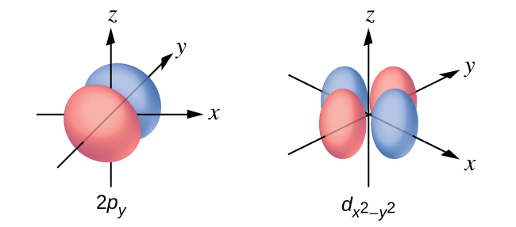

第6章 元素の電子構造と周期的性質
図6.1 | かに星雲は、超新星(星の爆発)の残骸からなります。この合成画像は、NASAのハッブル宇宙望遠鏡が撮影したものです。放射された光の波長を測定することで、天文学者は星雲内の元素を識別することができ、S⁺(緑色の繊維状のもの)とO²⁺(赤色の繊維状のもの)を含む特定のイオンが含まれていることを確認しました。(credit: modification of work by NASA and ESA)
この章の概要
6.1 電磁エネルギー
6.2 ボーアモデル
6.3 量子論の発展
6.4 原子の電子構造(電子配置)
6.5 元素の性質の周期的変動
はじめに
1054年、中国の天文学者は、昼間にも見える「客星」が空に出現したことを記録しました。その星は、その後2年間をかけてゆっくりと消えていきました。この突然の出現は超新星爆発によるもので、それは元々の星よりもはるかに明るいものでした。この超新星は1000年近くも前に観測されたものですが、現在残っている「かに星雲」(図6.1)は今日でもエネルギーを放出し続けています。かに星雲は、可視光だけでなく、赤外線やX線、他の形態の電磁放射も放出しています。かに星雲は、連続スペクトル(青-白色光)と原子発光スペクトル(色のついた繊維状のもの)の両方を放出しています。この章では、私たちは光やその他の形態の電磁放射について、またそれらが原子の電子構造とどのように関係しているかについて議論していきます。また、何千光年も離れた場所からでも、この電磁波を使って元素を識別することができる方法についても見ていきます。
6.1 電磁エネルギー
この節が終わるまでに、あなたは次のことができるようになります:
•進行波と定在波を含む波の基本的な振る舞いを説明する
•光の波動性を記述する
•適切な式を使用して、周波数、波長、エネルギーなどといった、関連する光と波の性質を計算する
•線発光スペクトルと連続発光スペクトルとを区別する
•光の粒子性を記述する
光の性質は古代から研究の対象とされてきました。17世紀には、アイザック・ニュートンは、レンズとプリズムを使用した実験を行い、白色光が虹の個々の色を組み合わせて構成されていることを実証することができました。ニュートンは、光がニュートンの運動法則に従って高速で移動する極度に小さな粒子の流れで構成されているという光の「粒子」的な見方の観点から、彼の光学的な発見を説明しました。クリスティアーン・ホイヘンスのような17世紀の他の人々は、反射や屈折などの光学現象は、すべての空間に浸透していると考えられていた「エーテル」と呼ばれる媒質を高速で移動する波としての光という観点からも同等にうまく説明できることを示していました。19世紀初頭、トマス・ヤングは、細くて間隔の狭いスリットを通過する光が、ニュートン的な粒子の観点では説明できないものの、波の観点では簡単に説明できるような干渉パターンを生み出すことを実証しました。19世紀のその後になって、ジェームズ・クラーク・マクスウェルが電磁放射の理論を開発し、光が電磁波の非常に広いスペクトルの可視部分であることを示した後、光の粒子的な見方は完全に信頼性が失われました。19世紀の終わりまでには、科学者たちは、物理的な宇宙のことを、2つの別々の領域から大まかに構成されているものと見なしていました:ニュートンの運動法則に従って動く粒子からなる物質と、マクスウェルの方程式によって支配される波からなる電磁放射です。現在では、これらの領域は古典力学および古典電気力学(または古典電磁気学)と呼ばれています。この枠組みの中では説明することのできない物理現象がいくつかありましたが、当時の科学者たちは、この枠組みの全体的な健全性に非常に自信を持っていたので、これらの逸脱は、この枠組みの中で最終的に何らかの形で解決がなされるであろう不可解なパラドックスであると考えていました。私たちがこれから見るように、これらのパラドックスは、波動-粒子の二重性と呼ばれる根本的なレベルで粒子と波を密接に結びつける現代的な枠組みにつながっており、これは古典的な見解に取って代わることとなりました。
可視光やその他の形態の電磁放射は、原子や分子内の電子のエネルギーを推測するために使用できるので、化学において重要な役割を果たしています。現代の技術の多くは、電磁放射に基づいています。たとえば、携帯電話からの電波、歯科医によって使用されるX線、電子レンジで食品を調理するために使用されるエネルギー、赤熱物体からの放射熱、およびテレビ画面からの光は、すべて波状の振る舞いを示すような電磁放射の形態です。
波
波とは、空間のある点から別の点へエネルギーを運ぶことができる振動や周期的な動きのことです。波の一般的な例は、私たちの身の回りにあります。ロープの一端を振るとあなたの手からロープのもう一方の端にエネルギーが移動したり、池に小石を落とすと水面に沿って波紋が外側に広がったり、落雷に伴う空気の膨張で音波(雷鳴)が発生して数マイルもの距離を移動したりします。これらのケースのそれぞれでは、運動エネルギーは物質(ロープ、水、または空気)を介して伝達されますが、物質は本質的にはその場に留まっています。波の本質を突く例は、スポーツスタジアムで起こります。そこでは、狭い範囲の座席にいるファンが一斉に動いて、腕を上げて数秒間立ち上がってから再び座ると、隣の区画にいるファンも同様に立ち上がって座り、これが順番に続いていきます。この波は数秒で大きなスタジアムをあっという間に一周しますが、実際にはファンの誰も波と一緒に移動することはなく、すべてのファンは自分の席に座っているか、自分の席の場所で立っています。
波は物質を通過することに限定される必要はありません。マクスウェルが示したように、電磁波は、垂直な磁場とそろって振動する電場で構成されています。それらは両方とも進行方向に垂直です。これらの波は、真空中を2.998×10⁸m/sという光の速度(cで表されます)で、一定速度で進むことができます。
電磁放射の形態を含むすべての波は、波長(λ、小文字のギリシャ文字ラムダで示されます)、周波数(ν、小文字のギリシャ文字ニューで示されます)、および振幅によって特徴付けられます。図6.2に示されるように、波長とは、波の連続する2つの山または連続する2つの谷の間の距離です(SI系ではメートルで測定されます)。電磁波は、非常に広い範囲の波長を有しています。キロメートル(10³m)からピコメートル(10⁻¹²m)までの波長が観測されています。周波数とは、空間の特定の点を特定の時間内に通過する波の周期の数です(SI系では秒で測定されます)。1周期は完全な1波長に相当します。周波数の単位は、1秒あたりの周期[s⁻¹]で表されるヘルツ(Hz)です。この単位の一般的な倍数は、メガヘルツ(1 MHz = 1 × 10⁶Hz)およびギガヘルツ(1 GHz = 1 × 10⁹Hz)です。振幅は波の変位の大きさに対応するので、図6.2では、山と谷の間の高さの2分の1に対応します。振幅は波の強度に関係しています。波の強度は、光では明るさ、音は大きさです。
図6.2 | いくつかの一次元正弦波が、波長、周波数、速度の間の関係性を示しています。波長が最も短い波が最も高い周波数を持っています。振幅は山から谷までの波の高さの2分の1です。
波の波長(λ)と周波数(ν)の積であるλνが波の速度となります。したがって、真空中の電磁放射の場合、速度は基礎定数cに等しくなります:
\[ c = 2.998 × 10^8\ {\rm ms⁻¹} = λν \]
波長と周波数は反比例します:波長が増加するにつれ、周波数は減少します。この反比例は図6.3に示されています。この図はまた、電磁スペクトル(電磁放射のすべてのタイプの範囲)を示しています。可視光のさまざまな色のそれぞれが、それらに関連付けられた特定の周波数と波長を持っています。あなたは、可視光が電磁スペクトルのほんの一部を構成しているだけだということがわかるでしょう。電磁スペクトルのさまざまな部分で動作するように開発された技術には色々なものがあるので、利便性と歴史的遺産という理由のために、通常、スペクトルの異なる部分には異なる単位が使用されます。たとえば、電波は通常、周波数(典型的にはMHzの単位)で指定される一方で、可視領域は通常、波長(典型的にはnmまたはオングストロームの単位)で指定されます。
図6.3 | 電磁スペクトルの一部を周波数が低くなるような順に、そして波長が長くなるような順に示しています。(credit “Cosmic ray”: modification of work by NASA; credit “PET scan”: modification of work by the National Institute of Health; credit “X-ray”: modification of work by Dr. Jochen Lengerke; credit “Dental curing”: modification of work by the Department of the Navy; credit “Night vision”: modification of work by the Department of the Army; credit “Remote”: modification of work by Emilian Robert Vicol; credit “Cell phone”: modification of work by Brett Jordan; credit “Microwave oven”: modification of work by Billy Mabray; credit “Ultrasound”: modification of work by Jane Whitney; credit “AM radio”: modification of work by Dave Clausen)
例題6.1 放射の周波数と波長を決定する
ナトリウムの街灯は、波長589nm(1nm=1×10⁻⁹m)の黄色の光を発します。この光の周波数は何ですか?
解法
私たちは、周波数について解くために、式 c = λν を並べ替えることができます:
\[ ν =\frac{c}{λ} \]
cはメートル毎秒で表されるので、私たちは589nmをメートルに変換しなければなりません。
\[ ν =\rm \left(\frac{2.998 × 10^8\ ms^{−1}}{589\ nm}\right)\left(\frac{1 × 10^9\ nm}{1\ m}\right)= 5.09 × 10^{14}\ s^{−1} \]
学習内容の確認
アメリカで携帯電話の信号を送受信するために使われている周波数の1つが850 MHzです。この電波の波長は何メートルでしょうか?
解答:0.353 m = 35.3 cm
日常生活の中の化学
無線通信
図6.4 | 電波塔や携帯電話の中継塔は、一般的に長波長の電磁放射を送信するために使用されています。アリゾナ州ツーソンのヤシの木を模した携帯電話の中継塔(右側)のように、景観に溶け込むように設計された携帯電話の中継塔が増えています。(credit left: modification of work by Sir Mildred Pierce; credit middle: modification of work by M.O. Stevens)
多くの有益な技術は、電磁スペクトルの無線(3 kHz～300 GHz)周波数領域で動作しています。この領域の低周波数(低エネルギー、長波長)端には、長距離を移動することができるAM(振幅変調)無線信号(540～2830kHz)があります。FM(周波数変調)無線信号は、より高い周波数(87.5～108.0 MHz)で使用されています。AM無線では、情報は波の振幅を変化させることによって送信されます(図6.5)。対照的にFM無線では、振幅は一定であり、瞬間的な周波数が変化します。
図6.5 | 振幅変調(AM)と周波数変調(FM)を用いて電波を伝送する様子を模式的に示しています。
他の技術もまた、電磁スペクトルの電波部分で動作します。たとえば、4G携帯電話信号は約880MHzであり、全地球測位システム(GPS)信号は1.228GHzと1.575GHzで動作し、ローカルエリア無線技術(Wi-Fi)ネットワークは2.4～5GHzで動作し、高速道路料金センサーは5.8GHzで動作します。これらの用途に関連した周波数は、このような波が一般的な建築材料にあまり吸収されない傾向があるために便利なものです。
波においてとりわけ特徴的な現象は、2つかそれ以上の波が接触したときに発生します:それらは、お互いに干渉します。図6.6は、光が約1波長分の狭い間隔をおいた細いスリットを通過したときに生じる干渉パターンを示しています。生成される縞模様パターンは波長に依存しており、所与のスリットの組を通過する光の波長が短いほど縞模様の間隔が狭くなります。光が2つのスリットを通過するときには、それぞれのスリットが実質的に新しい光源として機能し、その結果、2つの狭い間隔をおいた波が検出器(この場合はカメラ)の場所で接触します。図6.6の暗い領域は、一方のスリットからの波の山が他方のスリットからの波の谷と一致する領域(相殺的干渉)に対応します。また、最も明るい領域は、2つの波の山(またはそれらの2つの谷)が一致する領域(建設的干渉)に対応しています。同様に、2つの石を近くの場所で池に投げ込むと、石によって生成された波の相互作用の中に干渉パターンが見られます。このような干渉パターンは、古典力学の法則に従って動く粒子では説明できません。
図6.6 | 細く、間隔の狭い2つのスリットを通過した光についての干渉縞のパターンが示されています。縞模様の間隔は波長に依存し、波長のより短い青色光ほど縞模様の間隔が狭くなっていきます。(credit: PASCO)
化学者の肖像
ドロシー・ホジキン
X線の波長(10～10000ピコメートル[pm])は原子の大きさに匹敵するため、X線は分子の構造を決定するのに使うことができます。X線のビームが結晶の中に詰め込まれた分子を通過すると、X線は電子と衝突して散乱します。これらの散乱したX線の建設的干渉と相殺的干渉により、特定の回折パターンが形成されます。このパターンから逆算すると、分子内のそれぞれの原子の位置を非常に正確に決定することができます。この技術を生み出した先駆者の1人が、ドロシー・クローフット・ホジキンです。
彼女は1910年にエジプトのカイロで生まれました。彼女のイギリス人の両親はそこで考古学を研究していました。幼い少女の頃から彼女は鉱物や結晶に魅了されていました。オックスフォード大学の学生となった彼女は、生体分子の構造を決定するためにX線結晶学をどのように使用することができるかについての研究を開始しました。彼女は新しい技術を発明し、それによって彼女と彼女の教え子たちはビタミンB₁₂、ペニシリン、その他多くの重要な分子の構造を決定することができました。糖尿病は、世界中で3億8200万人が罹患している病気で、インスリンというホルモンが関係しています。ホジキンは1934年にインスリンの構造の研究を始めましたが、彼女が最終的に1969年にその構造を報告するまでには、この分野での数十年の進歩を必要としました。インスリンの構造を理解することで、この病気と治療法の選択肢のより良い理解へとつながっています。
すべての波が進行波であるわけではありません。定在波(定常波としても知られています)は、空間のある領域内に拘束されたままです。これから私たちが見ていくように、定在波は原子や分子の電子構造を理解する上で重要な役割を果たします。定在波の最も単純な例は、2つの端点で固定された振動するひもに関連付けられる一次元の波です。図6.7は、特定の振幅で振動するひもについての最もエネルギーの低い4つの定在波(基本波と最も小さな3つの高調波)を示しています。ひもの運動は大部分が平面内にありますが、波はひもの長さに沿って存在しているので、波自体は一次元であると考えられます。ひもの各部分がひもの長さに垂直な方向に運動することで波を発生させており、波の振幅は図6.7に見られる曲線の最大変位として見ることができます。この図から観察される重要なことは、端点間で半波長を整数nだけ持つ波のみが形成されるということです。このように端点が固定されている系では、可能な波形の数や種類が制限されます。これは、量子化(ある性質についての連続的な値からなるより一般的な集合の中の、離散的な値だけが観測されること)の例です。もう1つの重要な観察は、高調波(複数の半波長を示す波)はすべて、2つの端点の間に1つかそれ以上の運動していない点を持っていることです。これらの特別な点が節です。振動しているひもにおいて所定の振幅を持つ定在波のエネルギーは、半波長の数nに応じて増加します。節の数がn - 1であることから、エネルギーは節の数に依存するとも言うことができ、一般的には節の数が増えるにつれて増加します。
図6.7 | 振動するひもが、いくつかの一次元の定在波を示しています。ひもの2つの端点は固定されているので、半波長を整数個だけ持つ波のみが形成されます。ひもにおいて端点と端点の間で動かない点は節と呼ばれます。
二次元の定在波の例が図6.8に示されています。これは平面上の振動パターンを示しています。振動しているひもで見えていた振動の振幅はここでは見えませんが、振動面に粉(表面の最も変位の少ない部分に集まります)を散布することによって、節が見えるようにしています。一次元の定在波では、節は線の上の点でしたが、二次元の定在波では、節は表面上の線です(三次元の定在波では、節は三次元体積内の二次元面です)。
図6.8 | 振動する表面上で二次元の定在波を可視化することができます。表面には粉が散布されており、その粉は節の線の近くに集まっています。可視化されている節には、放射状の節(円)と角度のついた節(半径)の2種類があります。
学習へのリンク
ここで(http://openstaxcollege.org/l/16radnodes)、歌手のイモージェン・ヒープがケトルドラムに声を響かせて放射状の節を形成している様子を見ることができます。
黒体放射と紫外破綻
19世紀の最後の数十年には、新たに発見された電気照明の商業化に向けた集中的な研究活動が行われました。これには、検討されているさまざまな光源から放出される光の分布をよりよく理解する必要がありました。人工照明は通常、基礎となる技術の制限の範囲内で自然の太陽光を模倣するように設計されています。このような照明は、連続スペクトルを形成する広範囲に分布する周波数の幅によって構成されています。図6.9は、太陽光の波長分布を示しています。最も強い放射は可視領域にあり、短波長の紫外線(UV)光では強度が急速に低下し、長波長の赤外線(IR)光では強度が緩やかに低下しています。
図6.9 | UV光、可視光、IR光として地球の大気圏に到達した太陽光のスペクトル分布(光の強さと波長)。大気圏の最上部にある未吸収の太陽光は、青色の曲線で表される5250°Cの黒体の理論的分布とほぼ一致する分布を有しています。(credit: modification of work by American Society for Testing and Materials (ASTM) Terrestrial Reference Spectra for Photovoltaic Performance Evaluation)
図6.9では、黒体スペクトル(5250 °Cの温度に対応しています)と呼ばれる代表的な分布と太陽の分布とを比較しています。黒体スペクトルは太陽スペクトルと非常によく一致しています。黒体とは、加熱されたときの多くの物質の振る舞いを近似する、便利で理想的な放射体です。それが「理想的」であるというのは、理想気体が、圧力が高すぎず温度が低すぎないという条件でうまくいくような、実際の気体の便利で単純な表現であるのと同じ意味です。黒体放射を観測するために使用することのできる黒体の良い近似体は、非常に高温に加熱できる金属製のオーブンです。オーブンには小さな穴があり、オーブン内で放出された光を分光計で観測し、波長とその強度を測定することができます。図6.10は、いくつかの代表的な温度によって生じる曲線を示しています。それぞれの分布は、単一のパラメータである温度にのみ依存しています。黒体曲線の最大値であるλmaxは、温度が上昇するにつれて短い波長のほうにシフトします。これは、高温に加熱された金属が暗い赤色に光り始め、温度が上昇するにつれて明るくなり、最終的には、非常に高い温度で可視波長のすべての強度が相当な大きさになると白熱するようになるという観察を反映しています。この一般的な観察は、これから私たちが調べていく古典物理学の根本的な限界を示す最初のパラドックスの中心にありました。
物理学者たちは、古典力学と古典電磁気学の理論からの広く受け入れられていた概念を用いて、黒体曲線についての数学的表現を導き出しました。温度の関数としての理論的な表現は、長波長では観察された黒体曲線とよく一致していましたが、短波長では顕著な不一致を示しました。理論的な曲線はピークを示さなかっただけではなく、波長が小さくなるにつれて強度が無限に大きくなるという不条理さを示したのです。これでは、室温にある日常的な物体が大量の紫外線光を放出しているということを含意してしまいます。これは「紫外破綻」と呼ばれるようになりました。なぜなら、このような非現実的な短波長の振る舞いにつながるような理論的な扱いにおける問題をだれも見つけることができなかったからです。最終的に1900年頃、マックス・プランクが、実験的な観察に正確に一致する(実験誤差の範囲内で)ような黒体放射の理論的な表現を導き出しました。プランクは、オーブンを構成する原子が温度が上がるにつれて周波数が高くなる(すなわち波長が短くなる)ように振動し、その振動が放出される電磁放射の源となるという前提に基づいていたそれまでの研究を拡張することにより、この理論的な取り扱いを発展させしました。それまでの取り扱いでは、振動する原子は、エネルギーの連続的な集合から得られる任意のエネルギーの値を持つことが許されていました(古典物理学によれば、完全に合理的です)が、プランクは、振動エネルギーを周波数ごとの離散的な値に制限することによって、黒体放射の表現を正しく導出できることを発見しました。その表現は、紫外領域の短波長の強度が急激に低下することを正しく示しました。
\[ E = nhν,\ n = 1, 2, 3, . . . \]
量hは定数であり、現在では彼にちなんでプランク定数として知られています。プランクは自分が黒体放射のパラドックスを解決したことを喜んでいましたが、そうするためには、振動する原子が量子化されたエネルギーを必要とすると仮定する必要があり、それを説明することができないことを気にしていました。プランク定数の値は6.626×10⁻³⁴ジュール秒(J s)と非常に小さく、それまで巨視的な現象ではエネルギーの量子化が観測されていなかった理由を説明するのに役立ちます。
図6.10 | いくつかの代表的な温度での黒体スペクトル分布曲線が示されています。
光電効果
古典的な理論の中で、次に解決すべきパラドックスは光電効果に関係していました(図6.11)。ある限界周波数よりも大きな周波数の光を金属に当てると、金属のきれいな表面から電子が放出されることが観測されていました。驚いたことに、放出された電子の運動エネルギーは光の明るさに依存しておらず、光の周波数が高くなるにつれて増加していました。金属中の電子は、電子をそこに留めておくような一定の結合エネルギーを持っているので、入射した光は、電子を自由にするためには、それよりも多くのエネルギーを必要としました。古典波動理論によれば、波のエネルギーは周波数ではなく、その強度(それは振幅に依存します)に依存します。これらの観測の一部では、ある所与の時間内に放出される電子の数が、明るさの増加に伴って増加することが見られました。1905年、アルバート・アインシュタインは、プランクの量子化の知見を、疑問が持たれていた光の粒子的な見方に組み込むことによって、このパラドックスを解決することができました(アインシュタインは、実際にはこの仕事のためにノーベル賞を受賞しており、彼を最も有名にした相対性理論のためではありませんでした)。
アインシュタインは、プランクが黒体放射の取り扱いにおいて仮定していた量子化されたエネルギーを、光電効果の光に適用することができると主張しました。それによると、金属表面に当たる光は、波として見られるべきではなく、その代わりに、粒子(後に光子と呼ばれることになります)の流れとして見られるべきであり、粒子のエネルギーはその周波数に依存しています。そのエネルギーは、プランクの式によると、E = hν(または、c = νλを使用して波長によって表すと、E = hc/λ)です。電子は十分なエネルギー(しきい値よりも大きな周波数)を持つ光子が衝突すると放出されます。周波数が高いほど、より大きな運動エネルギーが、衝突によって散逸していく電子に付与されました。アインシュタインはまた、光の強度は、入ってくる波の振幅に依存しておらず、その代わりに、所定の時間内に表面に当たる光子の数に対応していると主張しました。これは、排出される電子の数が明るさの増加とともに増える理由を説明します。なぜなら、入射してくる光子の数が多くなればなるほど、それらが電子の一部と衝突する可能性が高くなるからです。
アインシュタインの発見によって、光の性質は新しく神秘的な雰囲気をまとうことになりました。光の現象の多くは波か粒子のいずれかの観点で説明することができますが、光が二重スリットを通過したときに得られた干渉パターンなどの特定の現象は、光の粒子的な見方には完全に反しており、一方で、光電効果などの他の現象は、光の波的な見方には完全に反していました。いまだ完全には解明されていない根源的なレベルにおいて、どういうわけか光は波動的であると同時に粒子的でもあるのです。これは波動-粒子の二重性として知られています。
図6.11 | 低い周波数の光子は、光電効果によって電子を放出させるのに十分なエネルギーを持っていません。限界周波数よりも大きな周波数の光では、放出される電子の運動エネルギーは入射する光子のエネルギーに対して線形に増加します。
例題6.2 放射のエネルギーを計算する
私たちがネオンサインの光を見ているとき、私たちは励起されたネオン原子からの放射を観察しています。この放射の波長が640nmであるとすると、放出される光子のエネルギーは何ですか?
解法
私たちはプランクの方程式の波長λを含む部分を使い、λとcの単位が同じになるようにナノメートルの単位をメートルに変換します。
\[ E =\frac{hc}{λ}\\ \begin{array}{ll} E ={\rm \frac{(6.626 × 10^{−34}\ J\ s)(2.998 × 10^8\ m\ s^{−1} )}{(640\ nm)\left(\frac{1\ m}{10^9\ nm}\right)}}\\ E ={\rm 3.10 × 10^{−19}\ J} \end{array} \]
学習内容の確認
電子レンジのマイクロ波は、食品に含まれる水分子を加熱する特定の周波数を持っています(これが、ほとんどのプラスチックやガラスが電子レンジの中で熱くならない理由です。それらは、水分子を含んでいません)。この周波数は約3×10⁹Hzです。このマイクロ波の光子ひとつのエネルギーは何ですか?
解答:2 × 10⁻²⁴J
学習へのリンク
このシミュレーションプログラム(http://openstaxcollege.org/l/16photelec)を使用して光電効果を実験し、強度、周波数、金属の種類、およびその他の要因が、放出される光子にどのような影響を与えるかを確認してください。
例題6.3 光電効果
以下の記述のうち、どれが誤っているかを特定してください。また、必要に応じて括弧内の単語または文章を変更して、それらがアインシュタインによる光電効果の説明と一致して正しくなるようにしてください。
(a)入射光の明るさを上げると、放出される電子の運動エネルギーが[増加する]。
(b)入射光の[波長]を上げると、放出される電子の運動エネルギーが増加する。
(c)入射光の明るさを上げると、放出される電子の数が[増加する]。
(d)入射光の[周波数]を上げると、放出される電子の数が増加することがある。
解法
(a)誤りです。入射光の明るさを上げても、放出される電子の運動エネルギーには[影響しません]。電子の運動エネルギーに影響を与えるのは、光子の数や振幅ではなく、エネルギーだけです。
(b)誤りです。入射光の[周波数]を上げると、放出される電子の運動エネルギーが増加します。周波数はエネルギーに比例し、波長に反比例します。しきい値よりも大きな周波数は、余分なエネルギーを電子の運動エネルギーへと移動させます。
(c)正しいです。光が明るくなるほど光子との衝突回数が増えるので、放出される電子の数が増加します。
(d)電子を金属に結合させるしきい値エネルギーに関しては正しいです。このしきい値より下では電子は放出されず、しきい値より上では放出されます。しきい値を超えた後は、さらに周波数を上げても放出される電子の数は増加しません。
学習内容の確認
光電効果が観測される最も低い周波数の光子は周波数が9.87×10¹⁴Hzであると仮定して、アルミニウム中の電子のしきい値エネルギーをkJ/molで計算してください。
解答:394 kJ/mol
線スペクトル
19世紀後半の科学者たちが悪戦苦闘していた古典的な電磁理論内のもう1つのパラドックスは、原子や分子から放出された光に関するものでした。固体、液体、または凝縮した気体が十分に加熱されると、それらは余分なエネルギーの一部を光として放射します。このようにして生成された光子は、さまざまなエネルギーの範囲を持ち、それによって連続スペクトルを生成します。このスペクトルの中では、切れ目のない一連の波長が存在します。星(太陽を含む)から生成された光のほとんどは、このようにして生成されています。あなたは、プリズムを使って太陽光を分離することによって、太陽光の中に存在するすべての可視波長の光を見ることができます。図6.9に示されているように、太陽光は紫外線光(短波長)と赤外線光(長波長)も含んでいます。これらは機器を使えば検出できますが、人間の目には見えません。白熱灯に含まれるタングステンフィラメントのような白熱する(光る)固体もまた、可視光の全波長を含む光を発しています。これらの連続スペクトルは、図6.10に示されるような適切な温度での黒体放射曲線によってしばしば近似することができます。
連続スペクトルとは対照的に、光はまた、図6.13に示されているように、スペクトル領域全体にわたって散在する非常に狭い線幅を持つ離散スペクトルまたは線スペクトルとして生じることもあります。低い分圧で電流を用いて気体を励起するか、または気体を加熱すると、線スペクトルが生成されます。蛍光灯やネオンサインはこのような方法で動作しています(図6.12)。それぞれの元素は、分子と同様に独自の特徴的な線のセットを提示しますが、そのスペクトルは一般的にははるかに複雑です。

図6.12 | ネオンサインは、低い分圧で電流を使って気体を励起することによって動作します。このネオンサインは、手の込んだ芸術的な効果が得られることを示しています。(credit: Dave Shaver)
それぞれの輝線は単一の波長の光で構成されており、気体が発する光は離散的なエネルギーのセットで構成されていることを意味しています。たとえば、低圧の水素気体の入った管の中を放電が通過すると、H₂分子がばらばらのH原子に分解され、私たちは青-ピンク色を目にします。この光をプリズムに通すと、図6.13に示されるように、線スペクトルが生成され、この光は可視光の4つの波長の光子で構成されていることが示されます。
図6.13 | 白色光の連続スペクトル(上)と、励起されたナトリウム原子、水素原子、カルシウム原子、水銀原子からの光の線スペクトルという2種類の発光スペクトルを比較してみましょう。
原子や分子の離散スペクトルの起源は、19世紀後半に科学者たちを極端に悩ませていました。なぜなら、古典的な電磁理論によると、連続スペクトルだけが観察されるべきだからです。さらに不可解なことに、1885年にヨハン・バルマーは、水素原子が発する光の4つの可視波長を整数に関連付ける経験的な方程式を導き出すことができました。その方程式は以下のようなものです。kは定数です:
\[ \frac{1}{λ}= k\left(\frac{1}{4}−\frac{1}{n^2}\right) ,\ n = 3, 4, 5, 6 \]
UV領域とIR領域において、水素原子の他の離散的な輝線が発見されました。ヨハネス・リュードベリはバルマーの研究を一般化し、経験的な方程式を発展させました。その式は可視域に限定されたものだけでなく、水素のすべての輝線を予測しました。ここで、n₁およびn₂はn₁<n₂の整数であり、R∞はリュードベリ定数(1.097 × 10 7 m⁻¹)です。
\[ \frac{1}{λ}= R_∞\left(\frac{1}{n_1^2}−\frac{1}{n_2^2}\right) \]
19世紀後半であっても、分光法は非常に精密な科学でしたので、水素の波長は非常に高い精度で測定されており、それはリュードベリ定数も非常に精密に決定できることを示唆していました。リュードベリの式のような非常に単純な式によってこのような正確な測定を説明できることは、当時には驚くべきことのように思えました。しかし、最終的に科学者に対して古典物理学を放棄することを決心させ、現代の量子力学の発展に拍車をかけたのは、1913年にニールス・ボーアによって発光スペクトルが最終的に説明されたことでした。
6.2 ボーアモデル
この節が終わるまでに、あなたは次のことができるようになります:
•水素原子のボーアモデルについて記述する
•リュードベリの方程式を使用して、水素原子によって放出または吸収される光のエネルギーを計算する
20世紀初頭のアーネスト・ラザフォードや彼の同僚らの研究を受けて、小さくて稠密な原子核の周りを、より軽く、さらに小さな電子が取り囲み、電子は核の周りを絶えず動き回っているという、原子の図式が確立されました。この図式は惑星モデルと呼ばれました。なぜならそれは、原子をミニチュアの「太陽系」として見立てたもので、太陽の周りを周回する惑星のように電子が原子核の周りを周回しているものだったからです。最も単純な原子は水素で、核としての1個の陽子からなり、その周りを1個の電子が動いています。電子を陽子に引き寄せる静電力は、2つの粒子間の距離にのみ依存します。しかしながら、この古典力学的な原子の記述は不完全です。なぜなら、楕円軌道上を移動する電子は(方向を変えることによって)加速しており、古典的な電磁気学によれば、それは電磁放射を継続的に放出しているはずだからです。このように軌道エネルギーが失われると、電子の軌道は小さくなり続け、原子核に螺旋状に入り込んでしまいます。これは原子は本質的に不安定であることを示唆しています。
1913年、ニールス・ボーアは、水素中で軌道を回っている電子は継続的に光を発するという古典電磁気学の予測を無視することによって、原子のパラドックスを解決しようと試みました。彼はその代わりに、プランクの量子化の考え方とアインシュタインの「光は光子で構成されており、光子のエネルギーはその周波数に比例する」という発見を、原子の古典力学的な記述に取り入れました。ボーアは、原子核の周りを周回している電子は通常、どのような放射も放出しないと仮定しました(定常状態仮説)が、電子が別の軌道に移動した場合、電子は光子を放出したり、吸収したりすると仮定しました。吸収または放出されたエネルギーは、以下の式に従って、軌道エネルギーの違いを反映しています:
\[ \left|ΔE\right| = \left|E_{\rm f} − E_{\rm i}\right| = hν =\frac{hc}{λ} \]
この式において、hはプランク定数であり、EiとEfはそれぞれ初期軌道エネルギーと最終軌道エネルギーです。周波数と波長は常に正であるため、エネルギー差の絶対値が用いられています。ボーアは、エネルギーの連続的な値を許容する代わりに、これらの電子軌道のエネルギーが量子化されていると仮定しました:
\[ E_n = −\frac{k}{n^2},\ n = 1, 2, 3,\ … \]
この式において、kは電子の質量や電荷、プランク定数などの基本定数からなる定数です。ΔEの式に軌道エネルギーの式を挿入すると、以下のようになります。
\[ ΔE = k\left(\frac{1}{n_1^2} −\frac{1}{n_2^2}\right)=\frac{hc}{λ}\\ または\\ \frac{1}{λ}=\frac{k}{hc}\left(\frac{1}{n_1^2}−\frac{1}{n_2^2}\right) \]
これは R∞ = k/hcとした場合におけるリュードベリの方程式と同一です。ボーアがリュードベリ定数R∞について理論的な値を計算し、それを実験的に認められた値と比較したところ、見事に一致していました。リュードベリ定数は当時最も正確に測定された定数の1つであったため、このレベルの一致は驚くべきものであり、ボーアがモデルを導き出すために多くの仮定を必要としたにもかかわらず、ボーアのモデルは真剣に受け止められることとなりました。
いくつかの最も低いエネルギー準位が図6.14に示されています。物理学の基本的な法則の1つに、物質は可能な限り低いエネルギーで最も安定しているというものがあります。したがって、水素原子の電子は通常、最も低いエネルギーを持つ軌道であるn=1の軌道の中で動いています。電子がこの最低のエネルギー軌道にあるとき、原子はその基底電子状態(または単に基底状態)にあると言われます。原子が外部の源からエネルギーを受け取ると、電子がより高いnの値を持つ軌道に移動することが可能になり、原子はより高いエネルギーを持つ励起電子状態(または単に励起状態)になります。電子が励起状態(エネルギーの高い軌道)から励起の程度が低い状態(または基底状態)に遷移すると、そのエネルギーの差が光子として放出されます。同様に、もし光子が原子によって吸収されるならば、光子のエネルギーによって電子が低いエネルギーの軌道からより励起された軌道へと移動します。私たちは、原子の中の電子のエネルギーを、エネルギーについて以前に学んだことと関連付けることができます。エネルギーの保存の法則は、私たちがエネルギーを作ることも破壊することもできないということを述べています。したがって、あるエネルギー準位から別のエネルギー準位に電子を励起するために所定の量の外部エネルギーが必要とされる場合、電子が初期状態に戻るときには、それと同じ量のエネルギーが解放されることになります(図6.15)。
ボーアのモデルは単一の電子のみに関するものであったため、単一の電子を持つイオンであるHe⁺、Li²⁺、Be³⁺などにも適用することができます。それらのイオンは、核の電荷だけが水素と異なっているため、1電子の原子とイオンは集合的に水素様原子と呼ばれます。水素様原子のエネルギー表現は、水素原子のエネルギーを一般化したもので、Zは核電荷(水素は+1、Heは+2、Liは+3など)、kは2.179×10⁻¹⁸Jの値を持ちます。
\[ E_n = − \frac{kZ^2}{n^2} \]
水素様原子の円軌道の大きさは、以下の式によってその半径として与えられます。ここで、α0はボーア半径と呼ばれる定数で、5.292×10⁻¹¹mの値を持ちます:
\[ r =\frac{n^2}{Z}a_0 \]
また、この方程式は、電子のエネルギーが増加すると(nが増加すると)、電子は原子核からの距離がより大きな場所で見つかるようになることを示しています。これは、静電引力の距離に対する逆依存性によって示されます。なぜなら、電子が原子核から離れるにつれて、電子と原子核の間の静電引力が減少し、電子が原子の中に保持される力が低下するからです。nが大きくなり、軌道が大きくなるにつれて、それらのエネルギーはゼロに近づくこと、そして、n ⟶ ∞とr ⟶ ∞の極限をとることによってE = 0とイオン化限界(そこでは電子が完全に核から取り除かれます)との対応が示されることに注意してください。したがって、基底状態n=1の水素の場合、イオン化エネルギーは以下のようになります:
\[ ΔE = E_{n \rightarrow ∞} − E_1 = 0 + k = k \]
いまや3つの非常に不可解なパラドックス(黒体放射、光電効果、および水素原子)が解決され、そのすべてが基本的な形でプランク定数を含んでいることから、当時のほとんどの物理学者にとって、巨視的な世界でうまく機能していた古典的な理論には根本的な欠陥があり、原子や分子の微視的な領域にまで拡張できないということが明らかになりました。残念なことに、ボーアはリュードベリ定数の理論的な表現を導き出すという目覚ましい成果をあげたにもかかわらず、電子を2個しか持たない次の最も単純な原子であるヘリウムに理論を拡張することができませんでした。ボーアのモデルは、正確な軌道という古典力学の概念にまだ基づいていたため、大きな欠陥がありました。その概念は、後に古典力学に取って代わる量子力学の適切なモデルが開発されたときに、微視的な領域では通用しないことが判明しました。
図6.14 | 水素原子の量子数とエネルギー準位。計算された値がマイナスであればあるほど、エネルギーは低くなります。
例題6.4 ボーア軌道にある電子のエネルギーを計算する
初期の研究者たちは、水素原子の原子核から特定の距離にある電子のエネルギーを予測できたとき、非常に興奮しました。もし1つのスパークによって水素原子の電子がn=3の軌道に移動したならば、電子のエネルギーは何ジュールになると計算できるでしょうか?
解法
電子のエネルギーはこの式で与えられます:
\[ E =\frac{−kZ^2}{n^2} \]
水素の原子番号Zは1、k = 2.179×10⁻¹⁸J、そしてこの電子はnの値が3であることによって特徴付けられます。 したがって、
\[ E =\rm \frac{−(2.179 × 10^{−18}\ J)× (1)^2}{(3)^2}= −2.421× 10^{−19}\ J \]
学習内容の確認
図6.15の電子は、さらに移動してn=6の軌道にいます。その新しいエネルギーは何ですか?
解答:−6.053 × 10⁻²⁰J
図6.15 | 水平線は水素原子のボーアモデルにおける軌道の相対的なエネルギーを示しており、垂直方向の矢印は電子がこれらの軌道の間を移動する際に吸収された光子のエネルギー(左側)または放出された光子のエネルギー(右側)を示しています。
例題6.5 一電子(ボーア)系における電子遷移のエネルギーと波長を計算する
n=4のボーア軌道からn=6の軌道への電子の移動を表すような水素スペクトル中の線のエネルギー(ジュールで)と波長(メートルで)は何ですか?電磁スペクトルのどの部分にこの放射があるでしょうか?
解法
この場合、電子はn=4から始まるので、n₁=4となります。電子はn = 6の軌道に収まるので、n₂=6となります。2つの状態間のエネルギーの差は、この式で与えられます:
\[ ΔE = E_1 − E_2 = 2.179 × 10^{−18}\left(\frac{1}{n_1^2}−\frac{1}{n_2^2}\right)\\ ΔE = 2.179 × 10^{−18}\left(\frac{1}{4^2}−\frac{1}{6^2}\right){\rm J}\\ ΔE = 2.179 × 10^{−18}\left(\frac{1}{16}−\frac{1}{36}\right){\rm J}\\ ΔE = 7.566 × 10^{−20}\ {\rm J} \]
このエネルギー差は正の値であり、光子が系に入り(吸収され)、電子をn=4軌道からn=6軌道まで励起することを示しています。このエネルギーを持つ光子の波長はE=hc/λの式によって分かります。この式を並べ替えると:
\[ \begin{eqnarray} λ &=&\frac{hc}{E}\\ &=& \rm (6.626 × 10^{−34}\ J\ s) ×\frac{2.998 × 10^8\ m\ s^{−1}}{7.566 × 10^{−20}\ J}\\ &=& \rm 2.626 × 10^{−6}\ m \end{eqnarray} \]
「6.1 電磁エネルギー」の電磁スペクトルの図6.3を見ると、この波長は電磁スペクトルの赤外線部分にあることがわかります。
学習内容の確認
He⁺イオン(He⁺の場合は Z = 2)の中で電子が n = 5 から n = 3 の準位に落ちたときに発生する光子のエネルギー(ジュールで)と波長(メートルで)は何ですか?
解答:6.198 × 10⁻¹⁹J、3.205 × 10⁻⁷m
水素原子についてのボーアのモデルは、物質の微視的なレベルでの振る舞いについての洞察を与えてくれますが、2つ以上の電子を持つ原子における電子-電子相互作用については説明ができません。そのモデルは、原子内の電子の分布を記述するために使用されるすべてのモデルにおけるいくつかの重要な特徴を導入しています。それらの特徴には、以下のようなものが含まれます:
原子内の電子のエネルギー(エネルギー準位)は量子化され、量子数によって表されます:量子数とは、特定の許容された値のみを持つ整数であり、原子内の電子の配置を特徴付けるために使用されます。
電子のエネルギーは、原子核からの距離が長くなるほど増加します。
元素のスペクトル内の離散的なエネルギー(線)は、量子化された電子エネルギーに由来しています。
これらの特徴の中で最も重要なのは、原子中の電子についての量子化されたエネルギー準位という仮定です。その結果、このモデルは原子の量子力学モデルの基礎を築きました。ボーアは、原子の構造と、それが線スペクトルの放出にどのように関係しているかについての理解への貢献を評価され、ノーベル物理学賞を受賞しました。
6.3 量子論の発展
この節が終わるまでに、あなたは次のことができるようになります:
•電磁放射で観測された波動-粒子の二重性の概念を物質にも拡張する
•原子の中の電子の量子力学的記述の一般的な考え方を理解するとともに、その考え方は、空間の特定の部分で電子が見つかるような確率の分布を定義する三次元波動関数(または軌道)の概念を使用していることを理解する
•原子の中の電子の状態を完全に特定するための基礎となる4つの量子数の特徴を列挙して記述する
ボーアのモデルは水素原子についての実験データを説明し、広く受け入れられていましたが、多くの疑問も提起していました。なぜ電子は、単一の量子数n=1, 2, 3, などによって定義された一定の距離だけを周回し、その間の部分では決して周回していないのでしょうか?なぜこのモデルは水素や一電子イオンをとても良く記述するのに、ヘリウムやそれよりも大きな原子の発光スペクトルを正しく予測できないのでしょうか?これらの疑問に答えるために、科学者たちは物質についての考え方を完全に見直す必要がありました。
微視的な世界での振る舞い
私たちは巨視的な世界において物質がどのように振る舞うかを知っています。肉眼で見ることができるほど大きな物体は、古典物理学のルールに従っています。台の上を移動するビリヤードのボールは、粒子のように振る舞うでしょう:それは、他のボールや台の縁と衝突するか、他の力(摩擦など)が作用しない限り、一直線に進み続けます。ボールは、いかなる任意の瞬間においても、明確に定義された位置と速度(または、質量mと速度vによって定義される、明確に定義された運動量p = mv)を持っています。言い換えると、ボールは古典的な軌道で動いているということです。これが古典的な物体の典型的な振る舞いです。
波が相互に作用するときには、それらはビリヤードのボールのような巨視的な粒子では表示されない干渉パターンを示します。たとえば、水面で相互作用する波は、図6.16に示されるのと似たような干渉パターンを生成することができます。これが巨視的なスケールでの波の振る舞いの場合であり、粒子と波動は巨視的な領域では非常に異なる現象であることが明確になります。
図6.16 | 水面上の干渉パターンは、波の相互作用によって形成されます。波は石による水の反射から発生します。(credit: modification of work by Sukanto Debnath)
技術的な改善により、科学者が微視的な世界をより詳細に調べることができるようになるにつれて、1920年代までには、非常に小さな物質のかたまりが、私たちの観察している大きな物体とは異なるルールの組に従っていることがますます明らかになってきました。波動と粒子を疑う余地なく分離することは、もはや微視的な世界では通用しないものとなりました。
微視的な世界の特殊な振る舞いに注目した最初の人物の1人がルイ・ド・ブロイです。彼はこのような質問を問いました:もし電磁放射が粒子状の性質を持つことができるのであれば、電子やその他の超微視的な粒子も波動のような性質を示すことができるのだろうか?彼の1925年の博士論文において、ド・ブロイは、アインシュタインが光電効果のパラドックスを解決するために使用した光についての波動-粒子の二重性を、物質の粒子へと拡張しました。彼は、以下の方程式によって、質量mと速度v(つまり線形運動量p)を持つ粒子もまた、波長λの値を持つ波の振る舞いを示すであろうと予測しました。ここで、hはよく知られたプランクの定数です:
\[ λ =\frac{h}{mv}=\frac{h}{p} \]
これはド・ブロイ波長と呼ばれています。この章で議論されているλの他の値とは異なり、ド・ブロイ波長は電磁放射の特性ではなく、粒子や他の物体の特性です(この方程式は周波数[ν、Hz]ではなく、速度[v、m/s]を含んでいることに注意してください。これらの2つの記号は外見がほぼ同じように見えますが、それらは非常に異なることを意味しています)。ボーアは、電子を量子化された軌道でもって原子核の周りを回る粒子と仮定していたのに対し、ド・ブロイは、電子を粒子としてではなく、整数個の波長だけが正確に軌道に収まるような円形の定在波として考えれば、ボーアの量子化の仮定は説明がつくと主張しました(図6.17)。

図6.17 | もし電子を原子核の周りを一周する波として見るならば、この定在波の振る舞いを可能にするためには、整数個の波長が軌道に収まらなければなりません。
半径rの円軌道の場合、円周は2πrなので、ド・ブロイの条件は以下のようになります:
\[ 2πr = nλ,\ n = 1, 2, 3, … \]
ド・ブロイが物質の波動性を提唱した直後、ベル研究所の2人の科学者C・J・デイヴィソンとL・H・ガーマーは、結晶中の規則的な原子パターンを通過する電子の干渉パターンを示すことによって、電子が波動のような振る舞いを示すことを実験的に証明しました。一定の間隔をおいた原子の層が、他の干渉実験でも使用されているようなスリットの役割を果たしました。干渉パターンが形成されるには、スリットとして機能する層の間の間隔がテストする波の波長と同じような大きさである必要があるため、デイヴィソンとガーマーは、「スリット」として結晶性ニッケルのターゲットを使用しました。なぜなら、その格子内の原子の間隔が、彼らの使用した電子のド・ブロイ波長とほぼ同じであったからです。図6.18は、干渉パターンを示しています。それは、「6.1 電磁エネルギー」で示された、2つの細くて間隔の狭いスリットを通過する光についての干渉パターンに顕著に類似しています。図6.18において、電子の衝突を長時間にわたって記録した場合にどうなるかを観察することによって、物質の波動-粒子の二重性を見ることができます。最初に、わずか数個の電子しか記録されていないときには、それらは明確な粒子状の振る舞いを示します(それらの電子は、ランダムなように見える小さな局在するかたまりとして到着します)。より多くの電子が到着して記録されるようになると、波のような振る舞いの特徴である明確な干渉パターンが出現しました。このように、電子は局在する小さな粒子である一方で、その運動は古典力学によってもたらされる運動方程式に従うのではなく、ある種の波動方程式に支配されているように見えます。このように、光子で最初に観測された波動-粒子の二重性は、実際にはすべての量子的な粒子にとって本質的である、基本的な振る舞いなのです。

図6.18 | (a)非常に間隔の狭いスリットを通過する電子の干渉パターンは、電子のような量子的な粒子が波動的な振る舞いを示すことを示しています。(b)ここに示されている実験結果は、電子における波動-粒子の二重性を実証しています。
学習へのリンク
波動-粒子の二重性とそれに関連する実験をわかりやすく描写した、ドクター・クオンタム — 二重スリット実験 — の漫画(http://openstaxcollege.org/l/16duality)を見てください。
例題6.6 粒子の波長を計算する
もしある電子が1.000×10⁷m s⁻¹の速度で移動し、質量が9.109×10⁻²⁸gの場合、その波長は何ですか?
解法
私たちは、ド・ブロイの方程式を使ってこの問題を解くことができますが、そのためにはまずプランク定数の単位変換をしなければなりません。あなたは1 J = 1 kg m²/s²であることを以前に学習しました。したがって、私たちは、h = 6.626 × 10⁻³⁴J s を 6.626 × 10⁻³⁴kg m²/s と書くことができます。
\[ \begin{eqnarray} λ &=&\frac{h}{mv}\\ &=&\rm \frac{6.626 × 10^{−34}\ kg\ m^2/s}{(9.109 × 10^{−31}\ kg)(1.000 × 10^7\ m/s)}\\ &=&\rm 7.274 × 10^{−11}\ m \end{eqnarray} \]
これは小さな値ですが、古典的(粒子的)な見方では電子の大きさよりもかなり大きい値です。この大きさは、原子のサイズと同じ桁の大きさです。これは、電子の波動的な振る舞いが原子の中では顕著になることを意味します。
学習内容の確認
速度35m s⁻¹で移動する質量100gのソフトボールの波長を計算してください。そのボールを単一粒子としてモデル化できると仮定してください。
解答:1.9 × 10⁻³⁴m。私たちは、投げられたソフトボールが波長を持つと考えることはありません。なぜなら、この波長は、私たちの感覚やいかなる既知の機器でも検出できないほど小さいためです(厳密に言えば、実際の野球のボールの波長は、その構成原子や分子の波長に相当します。それは、この値よりもはるかに大きいですが、それでも微視的な小ささです)。ド・ブロイ波長は、非常に小さな質量を持つ物質および/または非常に速い速度を持つ物質に対してのみ感知されます。
ヴェルナー・ハイゼンベルクは、電子やその他の微視的な粒子の性質をどれだけ正確に測定することができるかについての限界を考えました。彼は、粒子の位置と運動量を同時にどれだけ正確に測定することができるかには、根本的な限界があることを突き止めました。私たちが粒子の運動量を正確に測れば測るほど、その時の位置を決定する際の正確さは下がっていきますし、逆もまた然りです。これは、現在ではハイゼンベルクの不確定性原理と呼ばれるものに集約されています:粒子の運動量と位置の両方を同時に、かつ正確に決定することは根源的に不可能です。質量mの粒子がx方向に速度vₓで移動する場合(すなわち、運動量pₓで移動する場合)、位置の不確かさΔxと運動量の不確かさΔpₓの積は、ħ/2以上でなければなりません(ここで、ħ=h/2π、プランク定数の値を2πで割ったものです)。
\[ Δx × Δp_x = (Δx)(mΔv) ≥\frac{ħ}{2} \]
この式により、物体の位置と運動量の両方を同時にどれだけ正確に知ることができるかの限界を計算することができます。たとえば、もし私たちが電子の位置の測定を改善して、位置の不確かさ(Δx)がたとえば1 pm (10⁻¹²m、水素原子の直径の約1%)になるようにした場合、その運動量の決定は、少なくとも以下の値を持つ不確かさを有することになってしまいます。
\[ \left[ Δp = mΔv =\frac{h}{(2Δx)}\right] =\rm \frac{\left(1.055 × 10^{−34}\ kg\ m^2 /s\right)}{\left(2 × 1 × 10^{−12}\ m\right)} = 5 × 10^{−23}\ kg\ m/s \]
ħの値は大きくないので、野球のボールのような巨視的な物体の位置や運動量における不確かさは、観測するには小さすぎます。しかしながら、電子のような微視的な物体の質量は十分に小さいため、その不確かさは大きく、顕著なものになることがあります。
ハイゼンベルクの不確定性原理は、位置と運動量の不確かさに限定されているだけでなく、他の力学的変数も結び付けていることに注意しておくべきです。たとえば、原子が光子を吸収してあるエネルギー状態から別のエネルギー状態に遷移するとき、エネルギーの不確かさと遷移に要する時間の不確かさも、同様の形で関係しています(ΔE Δt ≥ħ/2のように)。
ハイゼンベルクの原理は、科学で知ることができることに対して究極の限界を課しています。不確定性原理は、波動-粒子の二重性の結果として示されます。この二重性は、現代の量子論を古典力学から区別するものの中心にあります。
学習へのリンク
微視的な物体に適用される不確定性原理を、最近、巨視的な形で実証したことについて述べたこの記事(http://openstaxcollege.org/l/16uncertainty)を読んでみてください。
原子の量子力学モデル
ド・ブロイが、水素原子の電子は量子化された円軌道を動く粒子ではなく、円形の定在波として考えたほうがうまくいくという考え方を発表した直後、エルヴィン・シュレーディンガーはド・ブロイの研究を拡張し、現在ではシュレーディンガー方程式として知られているものを導出しました。シュレーディンガーがその方程式を水素様原子に適用したところ、エネルギーについてのボーアの表現を再現することができ、そして、水素のスペクトルを支配するリュードベリの式を再現することができました。シュレーディンガーは、電子のことを、ギリシャ文字プサイψによって表される三次元定常波、または波動関数として記述しました。数年後、マックス・ボルンが波動関数ψの解釈を提案し、それは現在でもまだ受け入れられています:電子はそれでもまだ粒子であり、そのためψによって表される波は物理的な波ではなく、複素数の確率振幅です。波動関数の大きさの二乗∣ψ∣²は、量子的な粒子が空間内のある位置の近くに存在する確率を表しています。これは、波動関数を利用して、原子内での原子核に対する電子の密度の分布を決定することができる、ということを意味しています。最も一般的な形式では、シュレーディンガー方程式は以下のように書くことができます:
\[ \hat{H}ψ = Eψ \]
Ĥはハミルトニアン演算子であり、量子的な粒子(原子の中の電子など)の全エネルギーを表す数学的な演算の集合です。ψはこの粒子の波動関数であり、粒子が見つかる確率の特殊な分布を求めるのに用いることができます。Eはこの粒子の全エネルギーの実際の値です。
シュレーディンガーの研究は、ハイゼンベルクの研究や、彼らの後に続いた他の多くの科学者たちの研究とともに、一般的には量子力学と呼ばれています。
学習へのリンク
あなたは、有名な思考実験のためにシュレーディンガーの名前を聞いたことがあるかもしれません。この話(http://openstaxcollege.org/l/16superpos)では、毒入りの箱に入った猫に関連させて、重ね合わせと絡み合いの概念を説明しています。
原子の中の電子の量子論を理解する
この節の目標は、電子軌道(原子の中の電子の位置)、それらのさまざまなエネルギー、およびその他の性質を理解することです。量子論を使うことで、これらのトピックを最もよく理解することができます。この知識は、化学結合の先駆けとなります。
前述したように、原子の中の電子は離散的なエネルギー準位にしか存在できず、それらの間には存在できません。原子の中の電子のエネルギーは量子化されていると言われます。すなわち、それはある特定の値にしか等しくならず、あるエネルギー準位から別のエネルギー準位に跳躍することができますが、スムーズに遷移したり、それらの準位の間に留まったりすることはできません。
エネルギー準位は、nの値でラベル付けされています(ここで、n = 1, 2, 3, …)。一般的に原子の中の電子のエネルギーは、nの値が大きいほど大きくなります。この数nを主量子数と言います。主量子数は、エネルギー準位の位置を定義します。それは、本質的にはボーアの原子の記述のnと同じ概念です。主量子数の別の名前は殻数です。原子の殻は、原子核から放射状に出ている同心円と考えることができます。特定の殻に属する電子は、対応する円形の領域内で見つかる可能性が最も高いです。原子核から離れるほど殻数が大きくなり、エネルギー準位が高くなります(図6.19)。核内の正に帯電した陽子は、陽子の正電荷と電子の負電荷の間の静電引力によって電子軌道を安定させています。つまり、電子が原子核から離れているほど、電子が持っているエネルギーは大きいということです。
図6.19 | さまざまな殻が、主量子数によって番号が付けられています。
原子の中で電子がどこに存在しているかについてのこの量子力学的モデルは、電子があるエネルギー準位から別のエネルギー準位に移動するときに発生する電子遷移を見るために使用することができます。もしその遷移がより高いエネルギー準位へ行くものであれば、エネルギーが吸収され、エネルギーの変化は正の値を持ちます。より高いエネルギー準位への遷移に必要なエネルギー量を得るために、光子が原子によって吸収されます。より低いエネルギー準位への遷移は、エネルギーの放出を伴い、エネルギーの変化は負となります。この過程では、原子による光子の放出が伴います。以下の式はこれらの関係をまとめたものであり、水素原子に基づいています:
\[ ΔE = E_{\rm final} − E_{\rm initial}\\ = −2.18× 10^{−18}\left(\frac{1}{n_{\rm f}^2}−\frac{1}{n_{\rm i}^2}\right)\rm \ J \]
値nf、niは電子の最終エネルギー状態と初期エネルギー状態です。本章の前節の例題6.5では、このようなエネルギー変化の計算を実際に行っています。
主量子数は、軌道を特徴付けるために使用される3つの量子数のうちの1つです。原子軌道とは、電子が存在する可能性が最も高いような、原子の中の一般的な領域のことです。量子力学モデルは、原子核の周りの三次元空間で電子が見つかる確率を規定するもので、シュレーディンガー方程式の解に基づいています。また、主量子数は、水素や水素様原子またはイオン(電子が1個しかない原子またはイオン)に含まれる電子のエネルギーと、多電子の原子またはイオンに含まれる電子の離散的なエネルギー準位が位置する一般的な領域を定義しています。
もう1つの量子数は、二次(角運動量)量子数lです。それは、l = 0, 1, 2, …, n-1 の値を取ることができる整数です。これは、n=1の軌道は、ただ1つのlの値(l=0)しか持てないのに対し、n=2ではl=0、l=1の値が許容され、以下同様に続いていくことを意味します。主量子数nが軌道の一般的な大きさとエネルギーを定義するのに対し、二次量子数lは軌道の形状を規定します。同じ値のlを持つ軌道は、副殻を定義します。
l = 0の軌道はs軌道と呼ばれ、それらはs副殻を構成します。値l=1は、p軌道に対応します。所与のnについて、p軌道はp副殻を構成します(たとえば、n = 3の場合は3p)。l = 2の軌道はd軌道と呼ばれ、l = 3、4、および5についてはf、g、およびh軌道と続いていきます。
原子核からの所定の距離では、特定の軌道に位置する電子を見つける確率密度がゼロになります。言い換えると、この軌道についてのこの距離では波動関数ψの値はゼロです。このような半径rの値を放射ノードと呼びます。ある軌道の中の放射ノードの数はn-l-1です。
図6.20 | これらのグラフは、1s、2s、3s軌道の電子が見つかる確率(y軸)を、原子核からの距離の関数として示しています。
図6.20の例を考えてみましょう。描かれている軌道はs型であるため、すべての軌道でl = 0となります。確率密度のグラフから、1s軌道(n = 1)については密度がゼロになる場所(ノード)が0個(1 - 0 - 1 = 0)、2s軌道については1個のノード(2 - 0 - 1 = 1)、3s軌道については2個のノード(3 - 0 - 1 = 2)があることがわかります。
s副殻の電子密度分布は球状であり、p副殻はダンベル状です。d軌道とf軌道はより複雑です。これらの形状は、電子が見つかる可能性のある三次元領域を表しています。
図6.21 | s軌道、p軌道、d軌道、およびf軌道の形状。
磁気量子数mₗは、特定の軌道の相対的な空間的定位を規定します。一般に、mₗは、-l、-(l - 1)、…、0、…、(l - 1)、lに等しいです。同じ値のlを持つ(すなわち、同じ副殻内の)可能な軌道の総数は、2l + 1です。したがって、s副殻(l=0)にはs軌道が1個、p副殻(l=1)にはp軌道が3個、d副殻(l=2)にはd軌道が5個、f副殻(l=3)にはf軌道が7個、などとなります。主量子数は、電子エネルギーの一般的な値を定義します。角運動量量子数は軌道の形状を決定します。そして、磁気量子数は、図6.21に示されるように、空間における軌道の定位を規定しています。
図6.22 | この図は、多電子の原子における電子軌道のエネルギーを示しています。
図6.22は、さまざまな軌道のエネルギー準位を示しています。軌道の名前(2s、3pなど)の前の数字は主量子数nを表します。軌道の名前の文字は、特定の角運動量量子数lを持つ副殻を定義し、l = 0はs軌道、1はp軌道、2はd軌道です。最後に、l ≥ 1 の場合には複数の可能な軌道が存在し、それぞれがmₗの特定の値に対応しています。水素原子や一電子イオン(He⁺、Li²⁺など)の場合、同じnを持つすべての軌道のエネルギーは、同じになります。これは縮退と呼ばれ、同じ主量子数nについてのエネルギー準位は縮退軌道と呼ばれます。しかしながら、電子が複数ある原子では、この縮退は電子-電子相互作用によって解消され、図6.22に示されるように、異なる副殻に属する軌道は異なるエネルギーを持つようになります。同じ副殻内の軌道は縮退したままで、同じエネルギーを持っています。
前の段落で議論した3つの量子数は、電子軌道を記述するのにうまく機能しますが、いくつかの実験では、それらは観測された結果のすべてを説明するのに十分ではないことが示されました。1920年代には、水素の線スペクトルを非常に高い分解能で調べると、いくつかの線は実際には単一のピークではなく、間隔の狭い線の対になっていることが実証されました。これがいわゆるスペクトルの微細構造であり、それは、電子が同じ軌道に位置していても、電子のエネルギーにはさらに小さな違いがあることを示唆しています。これらの観測から、サミュエル・ゴーズミットとジョージ・ウーレンベックは、電子が第4の量子数を持つことを提案しました。彼らはこれをスピン量子数(mₛ)と呼びました。
他の3つの量子数n、l、mₗは、特定の原子軌道についての性質であり、電子が空間のどの部分に位置する可能性が最も高いかを定義しています。軌道は、原子の中の電子についてシュレーディンガー方程式を解いた結果です。電子のスピンは異なる種類の性質です。電子のスピンは、古典的な領域には類例のない完全に量子的な現象です。さらに、それはシュレーディンガー方程式を解くことからは導き出すことができず、通常の空間座標(直交のx、y、zなど)とは関係がありません。電子のスピンは、固有の電子の「回転」または「スピン」を記述します。それぞれの電子は、小さな磁石または角運動量を持つ小さな回転体として、あるいは電流を持つループとして振る舞っています(ただし、この回転や電流は空間座標の観点からは観察できませんが)。
電子の全体的なスピンの大きさは1つの値のみを持つことができます。また、電子は2つの量子化状態のうちの1つでのみ「スピン」することができます。1つはα状態と名前が付けられており、スピンのz成分がz軸の正の方向にあります。これはスピン量子数mₛ = 1/2に対応します。もう1つはβ状態と呼ばれ、スピンのz成分が負の方向にあり、mₛ = - 1/2 となります。いかなる電子であっても、それが位置する原子軌道に関係なく、スピン量子数の2つの値のうちの1つしか持つことができません。mₛ = -1/2 と mₛ = 1/2 を持つ電子は、外部磁場が印加された場合には、エネルギーが異なります。

図6.23 | 外部磁場の中でスピン値±1/2を持つ電子。
図6.23は、この現象を示しています。電子は小さな磁石のような働きをします。電子のモーメントは、スピン量子数が1/2の場合は上方向(z軸の正方向)に、スピン量子数が-1/2の場合は下方向(z軸の負方向)に向かいます。磁石は、その磁気モーメントが外部磁場と一致している場合は低いエネルギーを持ち(図6.23の左側の電子)、磁気モーメントが印加された磁場と反対である場合は高いエネルギーを持ちます。このため、mₛ = 1/2の電子は、正のz方向の外部磁場の中ではわずかに低いエネルギーを持ち、mₛ = - 1/2の電子は、同じ磁場の中ではわずかに高いエネルギーを持ちます。原子の中で同じ軌道を占める電子についても同じことが言えます。異なるスピン量子数を持つ電子が、同じ軌道から遷移するときに対応するスペクトル線は、2つの可能なエネルギー値を持ちます。したがって、スペクトルの中の線は、分離した微細構造を示すことになります。
パウリの排他原理
原子の中の電子は4つの量子数:n、l、mₗ、およびmₛによって完全に記述されます。最初の3つの量子数は軌道を定義し、4つ目の量子数はスピンと呼ばれる固有の電子の性質を記述します。オーストリアの物理学者ヴォルフガング・パウリは、原子の中の電子の一般的な振る舞いを理解するために必要な情報の最後の部分を与えてくれる一般原理を定式化しました。パウリの排他原理は以下のように定式化できます:同じ原子の中のどの2つの電子であっても、4つの量子数のすべてについて、全く同じ集合を持つことはできません。このことが意味するのは、2つの電子は、スピン量子数mₛの値が異なる場合にのみ、同じ軌道(量子数n、l、mₗの同じ集合)を共有することができるということです。スピン量子数は2つの値(±1/2)しか持つことができないので、2つよりも多くの電子が同じ軌道を占有することはできません(そして、もし2つの電子が同じ軌道に位置する場合は、それらは逆のスピンを持っていなければなりません)。したがって、どのような原子軌道でも、0個、1個、または2個の電子のみによって占有されます。
原子の中の電子の量子数の性質と意味は、表6.1に簡単にまとめられています。
表6.1
例題6.7 殻と副殻を扱う
原子のn = 4の殻の中にある、副殻の数、それぞれの副殻の中の軌道の数、およびそれらの軌道についてのlの値とmₗの値を示してください。
解法
n = 4 の場合、lは 0、1、2、3 の値を持つことができます。したがって、原子のn = 4の殻の中には、s、p、d、およびfの副殻が存在します。l = 0 (s副殻) の場合、mₗは 0 にしかなりません。 したがって、4s軌道は1つしかありません。l = 1 (p型軌道)の場合、mₗは-1、0、+1の値を持つことができるので、3つの4p軌道が見つかります。l = 2 (d型軌道)の場合、mₗは-2、-1、0、+1、+2の値を持つことができるので、5つの4d軌道があることがわかります。l = 3 (f型軌道) の場合、mₗは -3、-2、-1、0、+1、+2、+3 の値を持つことができ、7つの4f軌道を持つことができます。したがって、原子のn = 4の殻の中には合計16個の軌道があることがわかります。
学習内容の確認
以下の量子数を持つ電子が存在する副殻を特定してください:(a)n = 3、l = 1、(b)n = 5、l = 3、(c)n = 2、l = 0。
解答:(a)3p、(b)5f、(c)2s
例題6.8 最大の電子の数
(a)n = 2として、(b)n = 5として、(c)nを変数として、殻を占めることができる電子の最大の数を計算してください。ここでは、指定されたnの値を持つ軌道のみを見るのであって、より低いエネルギーにある軌道を見るのではないことに注意してください。
解法
(a)n = 2のとき、4つの軌道(1つの2s軌道と2pとラベル付けされる3つの軌道)があります。この4つの軌道は8個の電子を含むことができます。
(b)n = 5 のとき、足し合わせる必要がある軌道を持つ5つの副殻があります:
\[ \begin{array}{rr} & 5sとラベル付けされる1つの軌道\\ & 5pとラベル付けされる3つの軌道\\ & 5dとラベル付けされる5つの軌道\\ & 5fとラベル付けされる7つの軌道\\ +& 5gとラベル付けされる9つの軌道\\ \hline & 合計25個の軌道 \end{array} \]
ここでも、それぞれの軌道は2個の電子を保持するので、50 個の電子がこの殻に収まることになります。
(c)どのnの殻でも軌道の数はn²になります。それぞれの軌道には最大2個の電子があるので、電子の最大数は2×n²となります。
学習内容の確認
もしある殻が最大32個の電子を含む場合、主量子数nは何ですか?
解答:n = 4
例題6.9 量子数を扱う
以下の原子軌道についての表を完成させてください:

解法
表は、以下の規則を用いて完成させることができます:
•軌道指定はnとlであり、ここでl = 0, 1, 2, 3, 4, 5, …は文字列s, p, d, f, g, h, …に移し替えられます。
•mₗ縮退はl副殻内の軌道の数であり、2l + 1(s軌道が1個、p軌道が3個、d軌道が5個、f軌道が7個など)です。
•放射ノードの数は n - l - 1 に等しいです。
学習内容の確認
l = 2、n = 3を持つ軌道はいくつありますか?
解答:5つの縮退した3d軌道
6.4 原子の電子構造(電子配置)
この節が終わるまでに、あなたは次のことができるようになります:
•原子の予測される基底状態の電子配置を導出する
•原子やイオンの予測される電子配置の例外を特定し、説明する
•電子配置を周期表の中の元素分類へと関連付ける
ここまで、原子の構造と量子力学の基本を紹介してきましたが、私たちは量子数についての理解を利用して、原子の軌道がどのように相互に関係しているかを決定することができます。これにより、私たちはそれぞれの原子の中でどの軌道が電子によって占められているかを決定することができます。原子の軌道上の電子の特定の配置は、その原子の化学的性質の多くを決定します。
軌道エネルギーと原子の構造
原子軌道のエネルギーは、主量子数nが増加するにつれて増加します。2個かそれ以上の電子を持つ原子では、電子間の反発により、lの値が異なる副殻のエネルギーは異なったものとなり、そのためs < p < d < fといった順序で殻内の軌道のエネルギーが増加します。図6.24は、エネルギー増加の2つの傾向がどのように関係しているかを示しています。図の一番下にある1s軌道は、最も低いエネルギーを持つ電子の軌道です。2s、そして2p、3s、3pの軌道へと上がって行くにつれてエネルギーが増加しており、小さな原子ではnの値の増加がlの値の増加よりもエネルギーに大きな影響を与えていることが示されています。しかしながら、このパターンはもっと大きな原子の場合には当てはまりません。3d軌道は4s軌道よりもエネルギーが高いです。このような重なりは図を上に上がって行くにつれて頻繁に起こり続けます。
図6.24 | 2個かそれ以上の電子を持つ原子の原子軌道についての一般化されたエネルギー準位図(正確な縮尺ではありません)。
周期表上の連続した原子の電子は、低エネルギー軌道を最初に満たす傾向があります。そのため、たとえば、5p軌道が4d軌道の直後に、そして6s軌道の直前に充填されることは、多くの学生を混乱させてしまいます。この充填の順序は、観測された実験結果に基づいており、理論的な計算によっても確認されています。主量子数nが大きくなると、軌道のサイズが大きくなり、電子が原子核からより離れた場所で多くの時間を過ごします。そのため、核への引力は弱くなり、軌道に関連するエネルギーは高くなります(安定化されにくくなります)。しかし、これが私たちの考慮しなければならない唯一の効果というわけではありません。それぞれの殻の中では、lの値が大きくなるにつれて、s > p > d > fの順序で、電子が貫入しにくくなります(核の近くにある電子密度が低くなることを意味します)。核に近い電子は、遠くにある電子をわずかに反発し、より支配的である電子と核との引力をわずかに相殺します(すべての電子は-1の電荷を持っていますが、核は+Zの電荷を持っていることを思い出してください)。この現象は遮蔽と呼ばれ、次の節でより詳しく議論します。より多くの遮蔽を受けている軌道にある電子は安定性が低く、エネルギーが高くなります。小さな軌道(1sから3p)では、nによるエネルギーの増加のほうがlによる増加よりも顕著です。しかしながら、より大きな軌道では、2つの傾向は同等なものであり、単純に予測することはできません。私たちはこれから、観測される順序を覚える方法について議論していきます。
原子の軌道上での電子の配置のことを、原子の電子配置と呼びます。私たちは、3つの情報を含む記号を用いて電子配置を記述します(図6.25):
1. 主量子殻の番号n
2. 軌道の種類を指定する文字(副殻、l)
3. 特定の副殻に含まれる電子の数を表す上付き数字
たとえば、2p⁴(「ツー・ピー・フォー」と読みます)という表記は、主量子数(n)が2のp副殻(l = 1)に4個の電子があることを示しています。3d⁸(「スリー・ディー・エイト」と読みます)という表記は、n = 3の主殻のd副殻(すなわち、l = 2)に8個の電子があることを示しています。
図6.25 | この電子配置の図は、副殻(nとl(文字記号で)の値)と、上付き数字で電子の数を示しています。
構造原理
特定の原子の電子配置を決定するために、私たちは、原子番号順に構造を「構築」することができます。私たちは、水素から始めて、周期表の周期に沿って続けていくように、原子核に陽子を一度に1個ずつ、適切な副殻に電子を一度に1個ずつ追加していくと、すべての元素の電子配置が記述できるようになります。この手順は構造原理(Aufbau principle)と呼ばれています。これは、ドイツ語の単語Aufbau(「築き上げる」)に由来します。追加されたそれぞれの電子は、パウリの排他原理に従って、可能な量子数によって課された制限の下で、利用可能な最もエネルギーの低い副殻を占有します(図6.24に示された順序で)。電子は、低エネルギーの副殻が収容能力一杯にまで満たされた後に、高エネルギーの副殻に入ります。図6.26は、原子軌道の充填順序を覚えるための伝統的な方法を示しています。周期表の配置は電子配置に基づいているため、図6.27では電子配置を決定するための代わりの方法を提供しています。充填の順序は単純に水素から始まり、増えていくZの順に進むに従って、それぞれの副殻が含まれていきます。たとえば、3pブロックをArまで充填した後、軌道は4s(K、Ca) になり、その後に3d軌道が続くことがわかります。
図6.26 | この図は、原子軌道についてのエネルギーの順序を表しており、基底状態の電子配置を導き出すのに有用です。
図6.27 | この周期表は、それぞれの副殻の電子配置を示しています。この表を使って、水素から「築き上げ」ていくことによって、周期表上のどの原子の電子配置も決定することができます。
私たちはこれから、周期表の第1周期と第2周期の原子のいくつかについて、基底状態の電子配置と軌道図を作成していきます。軌道図は、電子配置を絵で表したもので、個々の軌道と電子の対の配置を示します。私たちはまず、1つの陽子と1つの電子からなる1つの水素原子(原子番号1)から始めます。図6.26や図6.27を参照すると、私たちは1s軌道に電子があることが予測できるでしょう。慣例によって、通常は mₛ = + 1/2 の値を最初に記入します。電子配置と軌道図はこうなります:
水素の次は原子番号2の貴ガスであるヘリウムです。ヘリウム原子には2個の陽子と2個の電子が含まれています。第1の電子は、水素原子の電子と同じ4つの量子数(n = 1、l = 0、mₗ = 0、mₛ = + 1/2)を持っています。2番目の電子も1s軌道に入り、その軌道を満たします。2番目の電子は同じn、l、mₗの量子数を持ちますが、反対のスピン量子数であるmₛ = - 1/2を持っていなければなりません。これでパウリの排他原理に従うことになります:同じ原子の中の2つの電子は、4つの量子数について、同じ集合を持つことはできません。これは、軌道図において、それぞれのボックスに2つの矢印が入り(それぞれの軌道の2つの電子を表します)、その矢印は反対方向を向いていなければならない(対のスピンを表します)、ということを意味します。ヘリウムの電子配置と軌道図は以下の通りです:
ヘリウム原子では、n = 1の殻は完全に満たされています。
次の原子は原子番号3のアルカリ金属リチウムです。リチウムの最初の2つの電子は1s軌道を満たし、ヘリウムの2つの電子と同じ4つの量子数の集合を持っています。残りの電子は、次に低いエネルギーの軌道である2s軌道を占めなければなりません(図6.26または図6.27)。したがって、リチウムの電子配置と軌道図は以下のようになります:
原子番号4のアルカリ土類金属ベリリウムの原子は、原子核の中の4個の陽子と原子核を取り囲む4個の電子を含んでいます。4個目の電子が2s軌道の残りの空間を満たします。

ホウ素(原子番号5)の原子には5個の電子が含まれています。n = 1の殻は2つの電子で満たされ、3つの電子がn = 2の殻を占めることになります。どのs副殻も2つの電子しか収容することができないため、5番目の電子は次のエネルギー準位を占めなければならず、それは2p軌道になります。3つの縮退した2p軌道があり(mₗ = -1, 0, +1)、電子はこれらのp軌道のいずれかを占有することができます。軌道図を描くときには、私たちが埋めていくのと同じ副殻内の空の軌道を表すために、空のボックスを含めます。
炭素(原子番号6)は6個の電子を持っています。そのうち4個の電子が1s軌道と2s軌道を満たしています。残りの2つの電子は2p副殻を占めます。ここで私たちには、2p軌道の1つを埋めて電子を対にするか、あるいは、2つの異なる縮退したp軌道において電子を対にしないままにしておくかの選択肢があります。軌道はフントの規則で記述されるように充填されます:フントの規則は、縮退した軌道の集合内に電子を持つ原子について最もエネルギーが低い構成は、対になっていない電子の数が最大であるものだ、ということを述べています。したがって、炭素の2p軌道にある2つの電子は、同一のn、l、mₛ量子数を持ち、mₗ量子数が異なります(パウリの排他原理に従って)。炭素の電子配置と軌道図は以下の通りです:
窒素(原子番号7)は、1sと2sの副殻を満たし、フントの規則に従って、3つの2p軌道にそれぞれ1つの電子を持っています。これら3つの電子は不対スピンを持っています。酸素(原子番号8)は、2p軌道のいずれか1つに1対の電子(電子のスピンは逆)を持ち、残りの2つにはそれぞれ1つの電子を持っています。フッ素(原子番号9)は、不対の電子を含む2p軌道を1つだけ持っています。貴ガスのネオン(原子番号10)の電子はすべて対になっており、n=1とn=2の殻の軌道はすべて満たされています。これら4つの元素の電子配置と軌道図は、以下の通りです:
アルカリ金属のナトリウム(原子番号11)は、ネオン原子よりも1個多い電子を持っています。この電子は、利用可能な最もエネルギーの低い副殻である3s軌道に入らなければならず、1s²2s²2p⁶3s¹の配置を与えます。一番外側の殻の軌道(nの最も高い値)を占める電子は、価電子と呼ばれ、内側の殻の軌道を占める電子は内殻電子と呼ばれます(図6.28)。内殻電子の殻は貴ガスの電子配置に対応しているため、私たちは、内殻電子配置に対応する貴ガスと価電子とを短縮した形式で書くことによって、電子配置を略記することができます。ナトリウムの例では、記号[Ne]は内殻電子(1s²2s²2p⁶)を表し、略記または短縮された電子配置は[Ne]3s¹となります。
図6.28 | 略記された内殻電子配置(右側)は、内殻電子を貴ガス記号に置き換えたものです。この貴ガスは、他の元素の内殻電子配置と一致する配置を有するものです。
同様に、リチウムの略記された電子配置は、[He]2s¹と表すことができます。ここで、[He]はヘリウム原子の電子配置を表します。それは、リチウムの内殻を満たす電子配置と同一です。このように電子配置を書くことで、リチウムとナトリウムの配置の類似性が強調されます。どちらの原子もアルカリ金属の族の中にあり、充填された内殻の集合の外側にある価電子のs副殻に1個の電子しか持っていません。
Li:[He]2s¹
Na:[Ne]3s¹
アルカリ土類金属のマグネシウム(原子番号12)は、12個の電子を[Ne]3s²の配置で持っており、同族のメンバーであるベリリウムの[He]2s²に類似しています。どちらの原子も、充填された内殻の外側に充填されたs副殻を持っています。13個の電子を持ち、電子配置が[Ne]3s²3p¹であるアルミニウム(原子番号13)は、同族のメンバーであるホウ素[He]2s²2p¹に類似しています。
ケイ素(14個の電子)、リン(15個の電子)、硫黄(16個の電子)、塩素(17個の電子)、アルゴン(18個の電子)の電子配置は、重い元素の外殻の主量子数が1つ増えて n = 3 になったことを除けば、外殻の電子配置はそれぞれ対応する同族のメンバーである炭素、窒素、酸素、フッ素、ネオンと類似しています。図6.29は、これらの元素の最も低いエネルギー、すなわち基底状態の電子配置と、既知のそれぞれの元素の原子の基底状態の電子配置を示しています。
図6.29 | 周期表のこのバージョンは、それぞれの元素の外殻の電子配置を示しています。それぞれの族を下にたどっていくと、電子配置がしばしば似ているということに注意してください。
周期表の次の元素であるアルカリ金属のカリウム(原子番号19)の場合、私たちは3d副殻に電子が追加され始めると予想するかもしれません。しかしながら、利用可能なすべての化学的および物理的証拠は、カリウムはリチウムやナトリウムと似ており、次の電子は3dの準位には加えられず、代わりに4sの準位に加えられるということを示しています(図6.29)。前述したように、放射ノードのない3d軌道は、放射ノードが3つある4s軌道に比べて、核への貫入性が低く、核からの遮蔽性が高いため、エネルギーが高くなります。そのため、カリウムは [Ar]4s¹の電子配置を持っています。したがって、カリウムはその原子価殻配置ではLiとNaに対応しています。次の電子を加えて4s副殻を完成させると、カルシウムは[Ar]4s²の電子配置を持つようになります。これにより、カルシウムの外殻電子配置はベリリウムとマグネシウムの外殻電子配置に対応することになります。
遷移金属のスカンジウム(原子番号21)から、追加の電子は3d副殻に順次加えられていきます。この副殻は10個の電子でその収容力が満たされます(l = 2 [d軌道]では、mₗの値は2l + 1 = 5であることを思い出してください。つまり、5個のd軌道があり、あわせて10個の電子の収容力があることになります)。次に4p副殻が満たされます。スカンジウム(Sc)から銅(Cu)、イットリウム(Y)から銀(Ag)、ルテチウム(Lu)から金(Au)の3つの系列の元素については、合計10個のd電子がn殻の隣の(n - 1)殻に連続的に加えられ、(n - 1)殻の電子が8個から18個になることに注意してください。ランタン(La)からルテチウム(Lu)と、アクチニウム(Ac)からローレンシウム(Lr)の2つの系列については、14個のf電子(l = 3、mₗの値は2l + 1 = 7。したがって、あわせて14個の電子の収容力を持つ7個の軌道)が、(n - 2)殻に順次加えられて、その殻を18個の電子から合計32個の電子へとします。
例題6.10 量子数と電子配置
リン原子の電子配置と軌道図はどうなりますか?最後に加えられた電子についての4つの量子数は何ですか?
解法
リンの原子番号は15です。したがって、リン原子には15個の電子が含まれています。エネルギー準位の充填の順序は、1s、2s、2p、3s、3p、4s、…です。リン原子の15個の電子は、3p軌道までを満たし、3p軌道は3個の電子を含むことになります。

最後に加えられた電子は3p電子です。したがって、n = 3、p型軌道の場合は l = 1 となります。mₗの値は-1、0、または+1となるでしょう。3つのp軌道は縮退しているので、これらのmₗ値はどれでも正しいです。不対電子については、慣習によってスピン量子数に+1/2の値を割り当てることになっています:したがって、mₛ = + 1/2です。
学習内容の確認
与えられた電子配置から原子を特定してください:
(a)[Ar]4s²3d⁵
(b)[Kr]5s²4d¹⁰5p⁶
解答:(a)Mn、(b)Xe
周期表は元素の電子配置を予測するための強力な道具となります。しかしながら、私たちは、図6.26や図6.27に示されているような軌道の充填の順序に例外を見つけることができます。たとえば、遷移金属のクロム(Cr、原子番号24)や銅(Cu、原子番号29)などの電子配置(図6.29)は、私たちが期待しているような電子配置ではありません。一般的に、このような例外にはエネルギーが非常に似ている副殻が関わっており、小さな影響で充填の順序が変わることがあります。
CrとCuの場合には、半分が満たされた副殻と完全に満たされた副殻は、見た目上は好ましい安定性の条件を表していることがわかります。この安定性とは、電子が4s軌道から3d軌道にシフトして、半分が満たされた3d副殻(Crの場合)や満たされた3d副殻(Cuの場合)の余分な安定性を得るというものです。その他の例外も発生します。たとえば、ニオブ(Nb、原子番号41)の電子配置は[Kr]5s²4d³と予測されます。実験的には、私たちはその基底状態の電子配置が実際には [Kr]5s¹4d⁴であることを観測しています。この観察は、5s軌道で電子を対にすることによって生じる電子-電子の反発力が、5s軌道と4d軌道の間のエネルギーのギャップよりも大きいためと考えることによって理屈づけることができます。電子間の反発力の大きさが副殻間のエネルギーの小さな差よりも大きい原子という例外を予測する簡単な方法はありません。
電子配置と周期表
前述したように、周期表は、原子番号が大きくなっていく順に基づいて、同じ化学的性質を持つ元素が周期的に繰り返されるように原子を並べています。周期表に原子の電子配置を加えると(図6.29)、私たちはこれらの元素の外殻にも似たような電子配置が周期的に繰り返されていることがわかります。価電子は原子の外殻にあるため、それらは化学反応において最も重要な役割を果たしています。外殻電子は原子内の電子の中で最も高いエネルギーを持っており、内殻電子よりも容易に失われたり、共有されたりします。また、価電子は、元素のいくつかの物理的性質を決定する要因でもあります。
いずれか1つの族(すなわち縦列)の中の元素は、同じ数の価電子を持っています。アルカリ金属のリチウムとナトリウムはそれぞれ1個の価電子を持っており、アルカリ土類金属のベリリウムとマグネシウムはそれぞれ2個の価電子を持っており、ハロゲンのフッ素と塩素はそれぞれ7個の価電子を持っています。同じ族の元素間で化学的性質が似ているのは、それらが同じ数の価電子を持っているからです。元素がどのように反応するかを決めるのは、価電子の喪失、獲得、または共有です。
周期表は、元素の化学的な振る舞いに基づいて(それらの原子構造についての何らかの考え方が利用できるようになるずっと前に)発展したことを思い出すことが重要です。私たちは今や、なぜ周期表がこのような配置になっているのかが理解できるようになりました。その配置は、原子の価電子数が同じであるような元素を同じ族に並べています。この配置は図6.29で強調されており、その図は構造原理によって満たされる最後の副殻の電子配置を周期表の形で示しています。図6.29の色分けされた部分は、満たされる軌道によって分類された元素の3つのカテゴリーを示しています:それは、主族元素、遷移元素、内部遷移元素です。これらの分類は、原子価殻の中でどの軌道が重要であるか、すなわち原子の最高エネルギー準位の軌道であるかを決定します。
主族元素(典型元素と呼ばれることもあります)とは、図6.29に青色と赤色で示されるように、最後に加えられた電子が最外殻のs軌道またはp軌道に入る元素のことです。このカテゴリーには、すべての非金属元素とともに、多くの金属や半金属も含まれます。主族元素の価電子は、最も高いn準位を持つものです。たとえば、ガリウム(Ga、原子番号31)は、[Ar]4s²3d¹⁰4p¹という電子配置であり、3つの価電子(4s²と4p¹)を含んでいます。完全に満たされたd軌道は、価電子ではなく内殻電子として数えられます。
遷移元素または遷移金属。これらは、最後に加えられた電子がd軌道に入る金属元素です。これらの元素の価電子(最後の貴ガス配置の後に加えられる電子)には、ns電子と(n - 1)d電子が含まれます。IUPACによる公式な遷移元素の定義では、部分的にd軌道が満たされた元素を指定しています。したがって、完全に満たされた軌道を持つ元素(図6.29のZn、Cd、Hg、そしてCu、Ag、およびAu)は、厳密には遷移元素ではありません。しかしながら、この用語はdブロック全体(図6.29の黄色で色付けされた部分)を指す用語としてよく使われるので、私たちはこの教科書の中ではそれを採用することにします。
内部遷移元素とは、最後に加えられた電子がf軌道を占める金属元素のことです。それらは、図6.29では緑色で示されています。内部遷移元素の原子価殻は、(n - 2)f、(n - 1)d、nsの副殻から構成されます。内部遷移系列は2つあります:
- ランタニド系列:ランタン(La)からルテチウム(Lu)まで
- アクチニド系列:アクチニウム(Ac)からローレンシウム(Lr)まで
ランタンとアクチニウムは、f電子を持たない遷移金属であるにもかかわらず、その系列の他のメンバーと類似していることから、これらの系列の中に含められ、系列の名前を付けるのに使用されています。
イオンの電子配置
イオンは、原子が電子を獲得したり失ったりするときに形成されます。カチオン(正に帯電したイオン)は、親原子から1個かそれ以上の電子が取り除かれるときに形成されます。主族元素の場合、最後に加えられた電子が最初に取り除かれる電子となります。しかしながら、遷移金属や内部遷移金属の場合、s軌道の電子はd電子やf電子よりも除去されやすいため、最も高いns電子が失われ、それから(n - 1)d電子や(n - 2)f電子が取り除かれます。アニオン(負に帯電したイオン)は、親原子に1個かそれ以上の電子が付加されるときに形成されます。加えられた電子は構造原理によって予測される順序で満たしていきます。
例題6.11 イオンの電子配置を予測する
以下のものの電子配置は何ですか:
(a)Na⁺
(b)P³⁻
(c)Al²⁺
(d)Fe²⁺
(e)Sm³⁺
解法
まず、それぞれの親原子の電子配置を書き出してください。私たちは、より多くの練習をしたい学生のために、完全な省略されていない電子配置を示すことを選びましたが、内殻を省略した電子配置を列挙しても構いません。
次に、電子が獲得されたか失われたかを判断してください。電子は負に帯電しているので、正の電荷を持つイオンは電子を失ったことになる、ということを思い出してください。主族元素の場合、最後の軌道が電子を獲得したり失ったりします。遷移金属の場合、最後のs軌道がd軌道よりも前に電子を失います。
(a)Na:1s²2s²2p⁶3s¹。ナトリウムのカチオンは1個の電子を失うので、Na⁺:1s²2s²2p⁶。
(b)P:1s²2s²2p⁶3s²3p³。リンのトリアニオンは3個の電子を獲得するので、P³⁻:1s²2s²2p⁶3s²3p⁶。
(c)Al:1s²2s²2p⁶3s²3p¹。アルミニウムのジカチオンは2個の電子を失うので、 Al²⁺:1s²2s²2p⁶3s¹。
(d)Fe:1s²2s²2p⁶3s²3p⁶4s²3d⁶。鉄(II)は2個の電子を失います。また鉄(II)は遷移金属であるため、それらの電子は4s軌道から取り除かれます。Fe²⁺:1s²2s²2p⁶3s²3p⁶3d⁶。
(e)Sm:1s²2s²2p⁶3s²3p⁶4s²3d¹⁰4p⁶5s²4d¹⁰5p⁶6s²4f⁶。サマリウムのトリカチオンは3個の電子を失います。最初の2個は6s軌道から失われ、最後の1個は4f軌道から取り除かれます。Sm³⁺:1s²2s²2p⁶3s²3p⁶4s²3d¹⁰4p⁶5s²4d¹⁰5p⁶4f⁵。
学習内容の確認
+2の電荷を持つイオンで、電子配置が1s²2s²2p⁶3s²3p⁶3d¹⁰4s²4p⁶4d⁵であるイオンはどれですか?+3の電荷を持つイオンで、このような電子配置を持つものはどれですか?
解答:Tc²⁺、Ru³⁺
6.5 元素の性質の周期的変動
この節が終わるまでに、あなたは次のことができるようになります:
•さまざまな元素についての原子の大きさ、イオン化エネルギー、電子親和力の観測された傾向を記述し、説明する
周期表の族(縦の列)に含まれる元素は、似たような化学的な振る舞いを呈します。このような類似性は、ある族のメンバーの原子価殻内の電子の数と分布が同じであるために起こります。しかしながら、周期表の化学的性質には他のパターンもあります。たとえば、ある族を下にたどっていくほど、原子の金属的な性質が増していきます。16族(6A)の一番上にある酸素は無色の気体です。この族の中間にあるセレンは半導体性の固体で、一番下にあるポロニウムは電気を通す銀灰色の固体です。
私たちがある周期を左から右へ進んでいくにつれて、一連の元素のそれぞれには、原子核に1個の陽子が、原子価殻に1個の電子が付け加えられていきます。私たちがある族の元素を下にたどっていく際には、原子価殻の中の電子の数は一定のままですが、一段下がるごとに主量子数は1ずつ増えていきます。元素の電子構造を理解することで、私たちは、化学的な振る舞いを支配するいくつかの性質を調べることができます。これらの性質は、元素の電子構造が変化すると周期的に変化します。その性質とは、(1)原子とイオンの大きさ(半径)、(2)イオン化エネルギー、(3)電子親和力です。
学習へのリンク
この節で議論する周期的な傾向(およびその他の多くの傾向)を視覚化したもの(http://openstaxcollege.org/l/16pertrends)を探索してみてください。数回クリックするだけで、あなたは原子の大きさを示す周期表の三次元バージョンを作成したり、測定されたすべての元素のイオン化エネルギーのグラフを作成したりすることができます。
共有結合半径の変動
量子力学的な描写では、原子の明確な大きさを確立することが困難になります。しかしながら、原子の半径を定義し、それによって、ほぼ同様の値を与えるような、原子の相対的な大きさを決定するための実用的な方法がいくつかあります。ここでは、私たちは共有結合半径(図6.30)を用います。これは、2つの同一の原子が共有結合によって結合したときの原子核間の距離の2分の1と定義されています(分子内の原子はまだ原子の同一性の多くを保持しているため、この測定が可能です)。私たちは、ある族を下へと調べていくと、主量子数nがそれぞれの元素ごとに1ずつ増加していくことを知っています。したがって、原子核からますます離れた空間の領域に電子が追加されていきます。その結果、原子の大きさ(および共有結合半径)は、原子核から一番外側の電子までの距離が長くなるほど大きくなります。この傾向は、表6.2と図6.30(a)で、ハロゲンの共有結合半径について示されています。周期表全体の傾向を図6.30(b)で見ることができます。
表6.2
図6.30 | (a)原子の半径は、共有結合によって結合した2つの同一の原子からなる分子の原子核間の距離の2分の1として定義されています。ハロゲンの原子半径は、族を下にたどってnが増加するほど大きくなります。(b)元素の共有結合半径が、一定の縮尺で示されています。一般的な傾向としては、半径は族の下の方で大きくなり、周期を右に進んでいくと小さくなります。
図6.31 | それぞれの周期内では、原子半径の傾向は、Zが増加するにつれて(たとえば、KからKrへと)小さくなっています。それぞれの族内(たとえば、紫色で示されるアルカリ金属)では、Zが増加するにつれて原子半径が大きくなる傾向があります。
図6.31に示されているように、ある周期を左から右へと移動していくと、一般的に、それぞれの元素は前の元素よりも共有結合半径が小さいことがわかります。これは、電子の多い原子ほど原子半径が小さいことを含意しているので、直感に反しているように思われるかもしれません。これは有効核電荷Zeffの概念を用いて説明することができます。これは、あらゆる電子-電子の反発力を考慮に入れた上で、原子核が特定の電子に及ぼす引力のことです。水素の場合、電子は1個しかないので、核電荷(Z)と有効核電荷(Zeff)は等しくなります。他のすべての原子では、内側の電子が外側の電子を原子核の引力から部分的に遮蔽しているため、以下のようになります:
\[ Z_{\rm eff} = Z − 遮蔽 \]
遮蔽は、関心のある電子と原子核との間に別の電子が存在する確率と、関心のある電子に作用する電子-電子間の反発力とによって決定されます。内殻電子は遮蔽をよく行いますが、同じ原子価殻内にある電子は、お互いが経験する核の引力を効率よく妨げることはありません。そのため、周期に沿ってある元素から次の元素へ移動するたびに、Zは1つ増加しますが、遮蔽はわずかに増加するだけです。したがって、Z~eff*は周期に沿って左から右に移動するにつれて増加します。周期表の右側にある電子が経験するより強い引力(より高い有効核電荷)は、電子を原子核に近づけ、共有結合半径を小さくします。
したがって、私たちが予想するように、最外殻電子または価電子は、最も高いエネルギーを持ち、より多くの遮蔽を受け、原子核から最も遠いため、最も簡単に取り除かれます。一般的な原則として、典型元素がカチオンを形成するとき、それらは構造原理の過程で最後に加えられたns電子やnp電子を失うことによってカチオンを形成します。一方、遷移元素は、(n - 1)d電子を失い始める前に、ns電子を失います(構造原理に従ってns電子が先に加えられたにもかかわらず)。
例題6.12 原子半径によって並べる
Ge、Fl、Br、Krについて、共有結合半径が増えていく順序を予測してください。
解法
半径は族を下に移動するにつれて大きくなるので、Ge < Flとなります(注:Flはフレロビウム、元素114の記号であり、フッ素ではありません)。半径は周期に沿って進むにつれて小さくなるので、Kr < Br < Geとなります。これらの傾向をまとめると、Kr < Br < Ge < Flとなります。
学習内容の確認
大きさがフッ素よりも小さい原子の例を挙げてください。
解答:NeまたはHe
イオン半径の変動
イオン半径は、イオンの大きさを記述するために使用される尺度です。カチオンは常に親原子と同じ数の陽子と親原子よりも少ない電子を持っています。カチオンは、それが由来する原子よりも小さいです(図6.32)。たとえば、アルミニウム原子(1s²2s²2p⁶3s²3p¹)の共有結合半径は118pmであるのに対し、Al³⁺(1s²2s²2p⁶)のイオン半径は68pmです。電子が外側の原子価殻から取り除かれると、小さな殻を占める残りの内殻電子は(議論したように)より大きな有効核電荷Zeffを経験し、原子核にさらに近づくように引き付けられます。
図6.32 | カチオンの半径は、失われた電子のために親原子(Al)よりも小さくなります。アニオンの半径は、獲得した電子のために親原子(S)よりも大きくなります。
大きな電荷を持つカチオンは、小さな電荷を持つカチオンよりも小さくなります(たとえば、V²⁺のイオン半径は79 pmであるのに対し、V³⁺のイオン半径は64 pmです)。周期表の族を下に進むと、同じ電荷を持つ一連の元素のカチオンは一般に、主量子数nの増加に対応して半径が大きくなることがわかります。
アニオン(陰イオン)は、原子の原子価殻に1個かそれ以上の電子が加えられることによって形成されます。この結果、電子間の反発力が大きくなり、電子1個あたりのZeffが減少します。両方の効果(電子の数の増加とZeffの減少)により、アニオンの半径は親原子の半径よりも大きくなります(図6.32)。たとえば、硫黄の原子([Ne]3s²3p⁴)の共有結合半径は104pmであるのに対し、硫黄のアニオン([Ne]3s²3p⁶)のイオン半径は170pmです。任意の族を下に進んでいく一連の元素では、アニオンの主量子数が大きくなり、したがって、半径が大きくなります。
同じ電子配置を持つ原子やイオンは、等電子であると言われます。等電子種の例としては、N³⁻、O²⁻、F⁻、Ne、Na⁺、Mg²⁺、およびAl³⁺(1s²2s²2p⁶)があります。別の等電子系列は、P³⁻、S²⁻、Cl⁻、Ar、K⁺、Ca²⁺、およびSc³⁺([Ne]3s²3p⁶)です。等電子である原子やイオンは、陽子の数によって大きさが決まります。核電荷が大きいほど、等電子系列のイオンや原子の半径は小さくなります。
イオン化エネルギーの変動
基底状態の気体原子から最も緩く結合している電子を除去するのに必要なエネルギーの量は、第一イオン化エネルギー(IE₁)と呼ばれます。ある元素Xの第一イオン化エネルギーは、+1の電荷を持つカチオンを形成するのに必要なエネルギーです:
\[ \rm X(g) ⟶ X^+ (g) + e^− \hspace{20pt} IE_1 \]
2番目に緩く結合した電子を除去するのに必要なエネルギーは、第二イオン化エネルギー(IE₂)と呼ばれます。
\[ \rm X^+\ (g) ⟶ X^{2+}\ (g) + e^− \hspace{20pt} IE_2 \]
3番目の電子を除去するのに必要なエネルギーは、第三イオン化エネルギーであり、このようにして続いていきます。原子やイオンから電子を除去するためには、エネルギーが常に必要とされるので、イオン化の過程は吸熱的であり、IEの値は常に正の値となります。大きな原子の場合、最も緩く結合している電子は原子核から離れた位置にあるため、除去しやすくなります。したがって、原子の大きさ(原子半径)が大きくなればなるほど、イオン化エネルギーは小さくなるはずです。この論理を半径について学んだことに関連させると、私たちは第一イオン化エネルギーが原子の族を下に行くほど減少し、周期に沿って右に進むほど増加すると予想するでしょう。
図6.33は、いくつかの元素の第一イオン化エネルギーと原子番号との関係性をグラフにしたものです。図6.34では、元素の第一イオン化エネルギーの値が与えられています。ある周期内では、IE₁は一般的にZの増加とともに増加します。ある族を下に進むと、IE₁の値は一般的にZの増加とともに減少します。しかしながら、この傾向からの体系的な逸脱がいくつかあります。ホウ素(原子番号5)のイオン化エネルギーは、ベリリウム(原子番号4)のイオン化エネルギーよりも小さい(ホウ素の核電荷が陽子1個分だけ大きいにもかかわらず)ことに注意してください。これは、(この章で以前に議論したように)貫入と遮蔽のために、lが増加するにつれて副殻のエネルギーが増加するからである、と説明することができます。1つの殻の中では、s電子はp電子よりもエネルギーが低いです。これは、同じ殻の中ではp電子よりもs電子の方が原子から除去しにくいことを意味しています。ベリリウム([He]2s²)のイオン化で取り除かれる電子はs電子ですが、ホウ素([He]2s²2p¹)のイオン化で取り除かれる電子はp電子です。この結果、ホウ素の方が核電荷が陽子1個分だけ大きいにもかかわらず、第一イオン化エネルギーが低くなります。このように、私たちは、新しい副殻が始まるたびに、予測される傾向からの小さな逸脱が起こることが見て取れます。
図6.33 | 最初の5つの周期の元素の第一イオン化エネルギーを原子番号に対してプロットしたものです。
図6.34 | 周期表のこのバージョンでは、選択された元素の第一イオン化エネルギー(IE₁)を kJ/molで示しています。
軌道が半分以上満たされてくると、もう1つの逸脱が生じます。周期に沿ってIE₁の値が増加する傾向にあるにもかかわらず、酸素の第一イオン化エネルギーは窒素の第一イオン化エネルギーよりもわずかに小さくなっています。酸素の軌道図を見ると、私たちは、電子を1個取り除くことで、2p軌道で電子が対になることによる電子-電子間の反発力がなくなり、半分満たされた軌道になる(これはエネルギー的に有利です)ことがわかります。似たような変化は後続の周期でも起こります(図6.34で、リンの後の硫黄の値が少し減っていることに注意してください)。
カチオンから電子を取り除くことは、中性原子から電子を取り除くことよりも困難です。なぜなら、カチオンの静電引力が大きいからです。同様に、正電荷の大きなカチオンから電子を取り除くことは、電荷の小さなイオンから電子を取り除くことよりも困難です。したがって、1つの元素についての連続的なイオン化エネルギーは常に増加します。表6.3に示すように、それぞれの元素のイオン化エネルギーは大きく増加しています。この上昇は、価電子よりも取り除くことが困難な内殻電子の除去に対応しています。たとえば、ScとGaは両方とも3つの価電子を持っているので、3回目のイオン化後にイオン化エネルギーの急激な増加が起こります。
表6.3
例題6.13 イオン化エネルギーをランク付けする
以下のプロセスについて、エネルギーが増加する順序を予測してください:AlのIE₁、TlのIE₁、NaのIE₂、AlのIE₃。
解法
Tlから6p¹電子を取り除くことは、Alから3p¹電子を取り除くよりも簡単です。なぜなら、大きなn軌道は、原子核から遠くにあるためです。そのため、IE₁(Tl) < IE₁(Al)となります。カチオンのAl²⁺は中性のAl原子よりも電子に対して強い引力を与えるため、Alから3番目の電子をイオン化する(Al²⁺ ⟶ Al³⁺ + e⁻)には、より多くのエネルギーを必要とします。そのため、IE₁(Al) < IE₃(Al)となります。ナトリウムの第二イオン化エネルギーは、内殻電子を除去します。これは価電子を除去するよりもはるかにエネルギーの高いプロセスです。これをまとめると、私たちは以下を得ます:IE₁(Tl) < IE₁(Al) < IE₃(Al) < IE₂(Na)
学習内容の確認
IE₁の値が最も低いのは、O、Po、Pb、Baのうちどれですか?
解答:Ba
電子親和力の変動
電子親和力(EA)とは、気体の原子に電子を加えてアニオン(陰イオン)を形成する過程のエネルギー変化のことです。
\[ \rm X\ (g) + e^− ⟶ X^−\ (g) \hspace{20pt} EA_1 \]
このプロセスは、元素に応じて、吸熱性または発熱性のいずれかとなります。いくつかの元素のEAが、図6.35に与えられています。あなたは、これらの元素の多くは負の値のEAを持っていることがわかるでしょう。これは、気体状の原子が電子を受け入れるときにエネルギーが放出されることを意味します。しかしながら、一部の元素では、原子が負に帯電するためにエネルギーを必要とし、EAの値が正の値になっているものもあります。イオン化エネルギーと同様に、後続のEA値は、より多くの電荷を持つイオンを形成することに関連しています。第二電子親和力は、アニオンに電子を加えて-2イオンを形成するときのエネルギーである、などです。
私たちが予想できるように、原子の有効核電荷が増加するにつれて、一連の原子に電子を付加することが容易になります。ある周期を左から右に行くほど、EAはより負の値になる傾向があることがわかります。第2族(2A)、第15族(5A)、第18族(8A)の元素の間で見られる例外は、これらの族の電子構造に基づいて理解することができます。第18族(8A)の貴ガスは殻が完全に満たされており、入ってくる電子はより高いn準位に加えられなければならず、これを行うのはより困難です。第2族(2A)は、満たされたns副殻を有しており、次に加えられる電子は、より高いエネルギーのnpに入るので、やはり、観測されるEA値は、傾向が予測するようなものではなくなります。最後に、第15族(5A)では、np副殻が半分満たされており、次の電子は既存のnp電子とペアを組まなければなりません。これらのケースのすべてで、電子配置の初期の相対的な安定性がEAの傾向を乱しています。
私たちはまた、それぞれの族の最上部にある原子が最も負のEAを持つと予想するかもしれません。それらの第一イオン化ポテンシャルは、これらの原子が最大の有効核電荷を持っていることを示唆しています。しかしながら、族を下に進んでいくと、族内の2番目の元素が最も負のEAを持つことが多いことがわかります。これは、n = 2の殻の大きさが小さいことと、その結果として生じる大きな電子-電子の反発力とに起因しています。たとえば、塩素のEA値は-348 kJ/molで、周期表のどの元素よりも高い値を持っています。フッ素のEA値は-322 kJ/molです。フッ素原子に電子を加えてフッ素アニオン(F⁻)を作るときには、n = 2の殻に電子を加えます。この電子は原子核に引き寄せられますが、この小さな原子価殻の中にすでに存在する他の電子からの大きな反発力もあります。塩素原子は、原子価殻内の電子配置は同じですが、入ってくる電子はn=3の殻に行くため、その電子が占める空間の領域がかなり大きくなり、電子-電子の反発力が少なくなります。入ってくる電子はそれほど大きな反発力を受けず、塩素原子は追加の電子をより容易に受け入れるので、結果としてEAがより負になります。
図6.35 | 周期表のこのバージョンでは、選択された元素の電子親和力の値(単位:kJ/mol)を表示しています。
この節で議論した性質(原子とイオンの大きさ、有効核電荷、イオン化エネルギー、電子親和力)は、化学反応性を理解する上で中心的なものです。たとえば、フッ素はエネルギー的に有利なEAとイオン化への大きなエネルギー障壁(IE)とを持っているため、フッ素カチオンよりもフッ素アニオンをはるかに容易に形成します。導電性や展性(シート状に成形することのできる能力)などの金属的性質は、簡単に取り除くことのできる電子を持っていることに依存しています。したがって、金属的な特性は、原子サイズについて観察されるのと同じ傾向でもって、族を下に行くほど大きくなり、周期に沿って小さくなります。なぜなら、原子核から離れた電子は取り除きやすいからです。
重要用語
振幅:波によって引き起こされる変位の程度
原子軌道:原子内の電子の振る舞いを記述する数学的な関数(波動関数とも呼ばれる)
構造原理:原子核に陽子を一度に1個ずつ、適切な副殻に電子を一度に1個ずつ加えて、原子番号順に元素を「構築する」ことによって、元素の電子配置を決定する手順
黒体:すべての入射電磁放射の理想的な完全な吸収体。このような物体は、黒体放射と呼ばれる特徴的な連続スペクトルで電磁放射を放出する
水素原子のボーアモデル:電子が原子核の周りを、特定の許容された半径を持つ円軌道の中でのみ動き回る構造モデル
連続スペクトル:切れ目のない一連の波長で与えられる電磁放射(たとえば、太陽からの白色光)
内殻電子:原子内で、内殻の軌道を占める電子
共有結合半径:2つの同一の原子が共有結合によって結合したときの原子核間の距離の2分の1
d軌道:高い電子密度を持つ空間の領域で、4つ葉状か、ダンベルおよびトーラス形状をしている。l = 2の軌道を記述する
縮退軌道:同じエネルギーを持つ軌道
有効核電荷:原子核が電子に及ぼすクーロン力につながる電荷で、核電荷から遮蔽を差し引いたものとして計算される
電磁放射:電場成分と磁場成分を持つ波によって伝達されるエネルギー
電磁スペクトル:電波、マイクロ波、赤外線、可視光線、紫外線、X線、ガンマ線など、電磁放射が構成することのできるエネルギーの範囲
電子親和力:気体原子やイオンへの電子の付加に関連するエネルギー変化
電子配置:原子の殻と副殻を電子が占めている状態を特定するための一覧
電子密度:空間の特定の領域に電子が位置する確率の尺度で、波動関数ψの絶対値の二乗に等しい
励起状態:基底状態のエネルギーよりも大きなエネルギーを持つ状態
f軌道:高い電子密度を持つ、複数の葉状の空間の領域であって、l = 3の軌道を記述する
周波数(ν):単位時間あたりに空間内の特定の点を通過する波の周期(山または谷)の数
基底状態:原子、イオン、または分子内の電子が、可能な限り最も低いエネルギーを持つ状態
ハイゼンベルクの不確定性原理:粒子の運動量や位置などの特定の共役の力学的性質を同時に正確に決定することは不可能であることを述べる規則。不確定性原理は、波動-粒子の二重性を呈する量子的な粒子の結果である
ヘルツ(Hz):周波数の単位で、1秒あたりの周期の数。s⁻¹
フントの規則:副殻内のすべての軌道が1つの電子によって単独で占有され、その後に1つの軌道が2つの電子によって占有されること、および単独で占有されている軌道内のすべての電子は同じスピンを持つこと
強度:光の明るさや音の大きさなど、波の振幅に関係する波の伝搬エネルギーの性質
干渉パターン:典型的には明るい縞と暗い縞を交互にして構成されたパターン。それは波の建設的干渉と相殺的干渉から生じる
イオン化エネルギー:気体原子やイオンから電子を取り除くのに必要なエネルギー
等電子:同一の電子配置を持つイオンや原子のグループ
線スペクトル:励起状態にある特定の原子によって放出される離散的な波長の電磁放射
磁気量子数(mₗ):原子核の周りの原子軌道の定位を規定する量子数
節:定在波で振幅がゼロの任意の点
軌道図:それぞれの軌道をボックスで、それぞれの電子を矢印で示すような、電子配置を絵で表した図
p軌道:高い電子密度を持つ、ダンベル状の空間の領域であって、l = 1の軌道を記述する
パウリの排他原理:原子の中のどの2つの電子であっても、4つの量子数のすべてについて、全く同じ集合を持つことはできないことを規定する
光子:電磁放射の可能な限り最小のかたまりであって、光の粒子
主量子数(n):電子が原子の中で占める殻を規定する量子数
量子化:ある性質を連続的ではなく、特定の離散的な値に限定すること
量子力学:物質を記述するためにエネルギーの量子化、波動-粒子の二重性、ハイゼンベルクの不確定性原理などを含める学問分野
量子数:特定の許容された値のみを持ち、原子内の電子の配置を特徴付けるために使用される数
s軌道:高い電子密度を持つ球状の空間の領域であって、l = 0の軌道を記述する
二次(角運動量)量子数:軌道のさまざまな形状を区別する量子数。また軌道の角運動量の尺度でもある
殻:同じ主量子数nを持つ原子軌道
スピン量子数(mₛ):電子のスピンの方向を規定する数であって、+ 1/2か− 1/2のいずれか
定在波(または、定常波):波を生成するために使われる境界条件によって決定される離散的な波長によって特徴付けられる、波の局所化した現象。定在波は本質的に量子化されている
副殻:nとlが同じ値を持つ原子軌道
価電子:基底状態の原子の最外殻または原子価殻(nが最高の値)にある電子
原子価殻:基底状態の原子の電子の一番外側の殻
波:時間または空間にわたる性質の振動。ある点から別の点へエネルギーを運ぶことができる
波動-粒子の二重性:素粒子が波動的な性質と粒子的な性質の両方を示すことができるという観察
波動関数(ψ):原子軌道の数学的記述であって、軌道の形状を記述する。軌道内の任意の場所で電子を見つける確率や、エネルギーと角運動量などの力学的変数を計算するために使用することができる
波長(λ):波の中で2つの連続した山または谷の間の距離
重要な方程式
\(• c = λν\)
\(• E = hν =\frac{hc}{λ},\ ここで\ h = {\rm 6.626 × 10^{−34}\ J\ s}\)
\(• \frac{1}{λ}= R_∞\left(\frac{1}{n_1^2}−\frac{1}{n_2^2}\right)\)
\(• E_n = −\frac{kZ^2}{n^2},\ n = 1, 2, 3,\ …\)
\(• ΔE = kZ^2\left(\frac{1}{n_1^2} −\frac{1}{n_2^2}\right)\)
\(• r =\frac{n^2}{Z}a_0\)
この章のまとめ
6.1 電磁エネルギー
光や他の形態の電磁放射は、2.998 × 10⁸m s⁻¹という一定の速度cで真空中を移動します。この放射は、c = λνとなるような周波数ν、波長λによって特徴付けられる波動的な振る舞いを示します。光は進行波の一例です。他の重要な波動現象には、定在波、周期振動、振動などがあります。定在波は、波長がいくつかの特徴的な長さの離散的な整数倍に制限されているため、量子化されています。波長とほぼ同じ寸法である2つの細くて間隔の狭いスリットを通過した電磁放射は、波の建設的干渉と相殺的干渉の結果として、干渉パターンを示します。電磁放射はまた、光子と呼ばれる粒子の性質も示します。光子のエネルギーは、E = hν(またはE = hc/λ)として放射の周波数(あるいはその代わりに波長)に関係しています。ここでhはプランク定数です。光が波動のような振る舞いと粒子のような振る舞いの両方を示すことは、波動-粒子の二重性として知られています。電磁放射のすべての形態はこれらの性質を共有しています。ただし、X線、可視光、マイクロ波、電波などのさまざまな形態では、物質と異なった形で相互作用し、実用上の応用が非常に異なります。電磁放射は、物質を加熱するなどして、物質をより高いエネルギーに励起することによって生成することができます。放射される光は、連続的なもの(太陽のような白熱源)であるか、または離散的なもの(特定の種類の励起原子からのもの)となります。連続スペクトルは、適切な温度での黒体放射として近似できる分布をしばしば持っています。水素の線スペクトルは、水素気体の入った管に電気を流したときの光をプリズムに通すことによって得ることができます。この線スペクトルは、リュードベリの式と呼ばれる経験的な式をスペクトルから導くことができるほど単純なものでした。19世紀後半から20世紀初頭にかけて、古典力学や古典電磁気学の既存の枠組みの中で説明することのできない3つの歴史的に重要なパラドックス、すなわち黒体問題、光電効果、および原子の離散スペクトルがありました。これらのパラドックスが解決されたことで、最終的には古典的な理論に取って代わる量子論が誕生しました。
6.2 ボーアモデル
ボーアはプランクとアインシュタインによる量子化の考え方を水素原子のモデルに取り入れ、原子の安定性と離散スペクトルのパラドックスを解決しました。ボーアの水素原子モデルは、光子の量子化と原子からの量子化された発光との間のつながりを説明しています。ボーアは水素原子のことを、原子核の周りを円軌道で移動する電子という観点から記述しました。彼は、電子が離散的なエネルギーによって特徴付けられる特定の軌道に制限されていると仮定しました。これらの許容される軌道の間の遷移は、光子の吸収や放出につながります。電子が高エネルギーの軌道からより安定な軌道に移動すると、光子という形態でエネルギーが放出されます。電子を安定な軌道からより励起された軌道に移動させるには、エネルギーとしての光子を吸収しなければなりません。ボーアモデルを使えば、私たちは、どのような一電子系でも、電子のエネルギーと電子軌道の半径を計算することができます。
6.3 量子論の発展
巨視的な物体は粒子として振る舞います。微視的な物体(電子など)は、粒子と波の両方の性質を持っています。それらの正確な軌道を決定することはできません。原子の量子力学モデルは、波動関数(しばしばψで表されます)と呼ばれる数学的な関数に従って、電子の三次元的な位置を確率的に記述します。原子の波動関数は軌道とも呼ばれます。波動関数の大きさの二乗は、空間の特定の領域で電子が見つかる確率の分布を表しています。したがって、原子軌道は、原子の中で電子が見つかる可能性が最も高い領域を記述しています。
原子軌道は3つの量子数によって特徴付けられます。主量子数nは任意の正の整数です。軌道のエネルギーの値の一般的な領域と原子核からの電子の平均距離はnに関係します。同じ値のnを持つ軌道は、同じ殻の中にあると言われます。二次(角運動量)量子数lは、0からn - 1までの任意の整数値を持つことができます。この量子数は、軌道の形状や種類を表します。同じ主量子数と同じlの値を持つ軌道は、同じ副殻に属します。磁気量子数mₗは、-lから+lまでの範囲の値で、総計2l + 1個の値となります。これは、空間における軌道の定位を記述します。さらに、それぞれの電子はスピン量子数mₛを持ち、その値は±1/2 に等しいです。同じ原子の中のどの2つの電子であっても、4つの量子数のすべてについて、全く同じ集合を持つことはできません。
6.4 原子の電子構造(電子配置)
副殻の相対的なエネルギーによって、原子軌道が満たされる順番が決まります(1s、2s、2p、3s、3p、4s、3d、4p、など)。電子配置や軌道図は、パウリの排他原理(どの2つの電子も、4つの量子数について同じ集合を持つことはない)とフントの規則(可能なときにはいつでも、電子は縮退軌道において不対スピンを保持する)を適用することによって決定することができます。
価電子と呼ばれる一番外側の軌道にある電子は、元素の化学的な振る舞いのほとんどを担っています。周期表では、類似の価電子配置を持つ元素は、通常、同じ族の中に存在します。予測された充填の順序にはいくつかの例外があり、特に半分が満たされた軌道または完全に満たされた軌道を形成することができるときに起こります。周期表は、最後に加えられた電子が配置される軌道に基づいて、主族元素(sおよびp軌道)、遷移元素(d軌道)、内部遷移元素(f軌道)の3つのカテゴリーに分けることができます。
6.5 元素の性質の周期的変動
私たちは、電子配置によって、多くの周期的な傾向を理解することができます。共有結合半径は、族を下に移動すると大きくなります。なぜなら、n準位(軌道サイズ)が大きくなるからです。共有結合半径は、周期に沿って左から右に移動すると、ほとんどの場合、減少します。なぜなら、電子に作用する有効核電荷が増加し、電子が原子核により強く引き寄せられるからです。アニオン半径は親原子よりも大きく、カチオン半径は親原子よりも小さくなりますが、これは価電子の数が変化しても核電荷は一定のままであるためです。イオン化エネルギー(カチオンを形成することに関連するエネルギー)は、族を下に進むほど減少し、周期に沿って大体は増加します。これは、より大きく、より高いエネルギーの軌道からは、電子を除去することがより容易であるためです。電子親和力(アニオンを形成することに関連するエネルギー)は、電子がより低いエネルギー軌道で、原子核のより近くに配置されるときに、より有利(発熱性)になります。そのため、電子親和力は周期表に沿って左から右に行くほど負の値になり、族を下に行くほど低下します。イオン化エネルギーと電子親和力の両方のデータについて、完全に満たされた副殻や半分が満たされた副殻を扱う場合は、それらの傾向に例外が存在します。
練習問題
6.1 電磁エネルギー
1.赤いネオンサインが発する光は、励起されたネオン原子の発光によるものです。ネオンランプからの光をプリズムに通すことによって生じるスペクトルを定性的に記述してください。
2.FMダイヤルの103.1で見つかるFMラジオ局は、1.031×10⁸s⁻¹(103.1 MHz)の周波数で放送しています。これらの電波の波長は何メートルですか?
3.FMラジオ局であるFM-95は、9.51×10⁷s⁻¹(95.1MHz)の周波数で放送しています。これらの電波の波長は何メートルですか?
4.水銀蒸気の発光スペクトルの435.8nmには、明るい紫色の線が生じます。この光の光子を生成するために、水銀原子内の電子が放出しなければならないエネルギー量は何ジュールですか?
5.波長614.5nmを持つ光はオレンジ色に見えます。このオレンジ色の光の1光子あたりのエネルギーは何ジュールですか?また、エネルギーは何eV(1eV=1.602×10⁻¹⁹J)ですか?
6.加熱されたリチウム原子は、2.961×10⁻¹⁹Jのエネルギーを持つ光の光子を放出します。これらの光子の1個の周波数と波長を計算してください。これらの光子の1モルの総エネルギーは何ですか?また、放出された光の色は何色ですか?
7.外科用レーザーによって生成された光の光子は、3.027×10⁻¹⁹Jのエネルギーを持ちます。この光子の周波数と波長を計算してください。この光子の1モルの総エネルギーは何ですか?また、放出された光の色は何色ですか?
8.ルビジウムイオンを高温に加熱すると、その線スペクトルに波長(a)7.9×10⁻⁷m、(b)4.2×10⁻⁷mの2本の線が観測されます。この2本の線の周波数は何ですか?私たちがルビジウム化合物を加熱すると、何色が見えるでしょうか?
9.セシウムの発光スペクトルには、(a)3.45×10¹⁴Hzと(b)6.53×10¹⁴Hzの周波数を持つ2本の線が含まれます。この2本の線の波長と1光子あたりのエネルギーは何ですか?また、線の色は何色ですか?
10.赤外線放射の光子は、私たちが火の前に手をかざしたときに感じる暖かさの多くの原因となっています。これらの光子は他の物体も暖めます。1.5 × 10⁻⁶m の波長を持つ赤外線の光子は、コップ一杯の水(175 g)を 25.0 °Cから 40 °Cに温めるためには、水に何個吸収されなければならないでしょうか?
11.歯科医院で使用されているX線撮影装置の1つは、波長2.090×10⁻¹¹mのX線を放射しています。このX線のエネルギー(ジュールで)および周波数は何ですか?
12.ある種の爬虫類の目は、視覚受容体に波長850nmの光子がいくつか当たると、単一の視覚信号を脳に伝えます。この信号を送るのに3.15×10⁻¹⁴Jの合計エネルギーが必要だとすると、受容体に当たらなければならない光子の最小数は何個でしょうか?
13.RGBカラーテレビやコンピュータディスプレイには、赤、緑、青の光を混合させることにより色を作り出すブラウン管が使われています。もし私たちが虫眼鏡で画面を見ると、色の変化に合わせて個々のドットが点灯したり消灯したりするのがわかります。可視光のスペクトルを使って、これらの色のそれぞれのおおよその波長を決定してください。これらの色のそれぞれの光子の周波数とエネルギーは何ですか?
14.Blu-rayレーザーについての以下の質問に答えてください:
(a)Blu-rayプレーヤーに搭載されているレーザーは405nmの波長を持っています。この放射は、電磁スペクトルのどの領域にありますか?その周波数は何ですか?
(b)Blu-rayレーザーは、5ミリワット(1 ワット = 1 J s⁻¹)のパワーを持っています。このレーザーは1時間に何個の光の光子を発生させますか?
(c)レーザーを用いたプレーヤー(Blu-rayプレーヤーなど)の理想的な解像度は、1枚のディスク上でデータをどれだけ近づけて保存することができるかを決定するものであり、以下の式を用いて求められます:解像度 = 0.60(λ/NA)。ここで、λはレーザーの波長、NAは開口数です。開口数は、ディスク上の光のスポットの大きさの尺度であり、NAが大きいほど、スポットは小さくなります。典型的なBlu-rayシステムでは、NA = 0.95です。405nmレーザーがBlu-rayプレーヤーで使用されている場合、Blu-rayディスクに情報を保存できる最も近い距離はどれだけですか?
(d)405nmレーザーを使用したBlu-rayディスクのデータ密度は、1.5 × 10⁷ビットmm⁻²です。ディスクの外径は 120 mm、穴の直径は 15 mm です。ディスクには何ビットのデータを収めることができますか?1枚のBlu-rayディスクに940万ページのテキストを格納できるとしたら、タイプされた1ページについて必要とされるデータは何ビットですか?(ヒント:データを保持するために利用可能なディスクの面積を決定します。円の内側の面積は、A = πr²で与えられます。ここで半径rは直径の2分の1です。)
15.周波数6.66×10¹⁴s⁻¹の光子が7.74×10⁻²⁰Jの運動エネルギーを持つ電子を放出させた場合の金属ナトリウムの限界周波数は何ですか?ナトリウムにオレンジ色の光を照射した場合、光電効果は観測されるでしょうか?
6.2 ボーアモデル
16.ボーアの水素原子の中の電子は、量子数3を有するときのほうが量子数1を有するときよりも結合が弱いのはなぜでしょうか?
17.原子の中の電子のエネルギーが量子化されているとはどういうことを意味しますか?
18.ボーアモデルを用いて、基底状態の水素原子をイオン化するのに必要なエネルギーをジュールで求めてください。計算の過程を示してください。
19.電子ボルト(eV)は、原子スケールのエネルギーを表すのに便利なエネルギーの単位です。それは電子に1ボルトの電位が与えられたときに得られるエネルギー量で、1 eV = 1.602 × 10⁻¹⁹Jです。ボーアモデルを用いて、水素原子の電子がn=5の軌道からn=2の軌道に移動したときに発生する光子のエネルギーを電子ボルトで求めてください。計算の過程を示してください。
20.ボーアモデルを用いて、Li²⁺イオンの電子の可能な最小エネルギーをジュール単位で求めてください。
21.ボーアモデルを用いて、He⁺イオンの電子の可能な最小エネルギーを求めてください。
22.ボーアモデルを用いて、水素原子の中のn=6の電子のエネルギーを求めてください。
23.ボーアモデルを用いて、水素原子の中のn=8の電子のエネルギーを求めてください。
24.水素原子の中の電子が-8.72 × 10⁻²⁰Jのエネルギーを持っている場合、その電子は原子核から何オングストローム(1オングストローム=1 × 10⁻¹⁰m)の距離にありますか?
25.水素原子の中のn=8の電子の軌道の半径は何オングストロームですか?
26.ボーアモデルを用いて、He⁺イオンの電子がn=5の軌道からn=2の軌道に移動したときに発生する光子のエネルギーをジュール単位で求めてください。
27.ボーアモデルを用いて、Li²⁺イオンの電子がn=2の軌道からn=1の軌道に移動したときに発生する光子のエネルギーをジュール単位で求めてください。
28.n=1、2、3、4の軌道にランダムに配置された電子を持つ多数の水素原子を考えてみましょう。
(a)電子が低エネルギー軌道に落ちると、これらの原子からは何種類の異なる波長の光が放射されるでしょうか?
(b)設問(a)で記述した遷移によって生成される光の最低エネルギーと最高エネルギーを計算してください。
(c)設問(b)で記述した遷移によって生成される光の周波数と波長を計算してください。
29.原子のボーアモデルとラザフォードモデルはどのように似ていますか?また、それらはどのように違うでしょうか?
30.水素とカルシウムのスペクトルがここに示されています。

これらのスペクトルの線の原因は何でしょうか?線の色が違うのはなぜですか?カルシウムのスペクトルが水素のスペクトルよりも複雑であるという観察についての理由を提案してください。
6.3 量子論の発展
31.水素原子のボーアモデルと量子力学モデルはどのように似ていますか?また、それらはどのように違うでしょうか?
32.4つの量子数n、l、mₗ、mₛのそれぞれについて許容される値は何ですか?
33.4つの量子数n、l、mₗ、mₛのそれぞれに関連する電子の性質を記述してください。
34.以下の質問に答えてください。
(a)量子数を用いずに、原子の殻、副殻、軌道の違いを記述してください。
(b)原子の殻、副殻、および軌道の量子数はどのように異なるでしょうか?
35.以下の量子数を持つ電子が存在する副殻を特定してください:
(a)n = 2、l = 1
(b)n = 4、l = 2
(c)n = 6、l = 0
36.前問で述べた副殻のうち、どれに縮退軌道が含まれていますか?それぞれに縮退軌道はいくつありますか?
37.以下の量子数を持つ電子が存在する副殻を特定してください:
(a)n = 3、l = 2
(b)n = 1、l = 0
(c)n = 4、l = 3
38.前問で述べた副殻のうち、どれに縮退軌道が含まれていますか?それぞれに縮退軌道はいくつありますか?
39.dx²-y²軌道とpy軌道の境界面をスケッチしてください。必ず軸を示して名前を付けてください。
40.pxとdxzの軌道をスケッチしてください。必ず座標を示して名前を付けてください。
41.ここに概要が示されている軌道を考えてみましょう。
(a)タイプ(x)の軌道に含まれる電子の最大数は何個ですか?タイプ(y)の軌道に含まれる電子の最大数は何個ですか?タイプ(z)の軌道に含まれる電子の最大数は何個ですか?
(b)n = 2の殻にはタイプ(x)の軌道は何個あるでしょうか?タイプ(y)の軌道は何個あるでしょうか?タイプ(z)の軌道は何個あるでしょうか?
(c)n = 4の殻の中のタイプ(x)の軌道にある1個の電子の量子数を書いてください。n = 2の殻の中のタイプ(y)の軌道にある1個の電子の量子数を書いてください。n = 3の殻の中のタイプ(z)の軌道にある1個の電子の量子数を書いてください。
(d)タイプ(x)の軌道の最小のnの値は何ですか?タイプ(y)の軌道の最小のnの値は何ですか?タイプ(z)の軌道の最小のnの値は何ですか?
(e)タイプ(x)の軌道で可能なlとmₗの値は何ですか?タイプ(y)の軌道で可能なlとmₗの値は何ですか?タイプ(z)の軌道で可能なlとmₗの値は何ですか?
42.ハイゼンベルクの不確定性原理を述べてください。その原理が何を意味するかを簡単に記述してください。
43.スピン量子数mₛが2つではなく3つの値を持つことができるとしたら、原子の第2の殻には何個の電子が保持されるでしょうか?(ヒント:パウリの排他原理を考えてみましょう。)
44.以下の式のうち、粒子のような振る舞いを記述するものはどれですか?波のような振る舞いを記述するものはどれですか?両方のタイプの振る舞いを含むものはありますか?選択した理由を記述してください。 \(({\rm a}) c = λν \hspace{10pt} ({\rm b}) E =\frac{mν^2}{2} \hspace{10pt} ({\rm c})r =\frac{n^2 a_0}{Z} \hspace{10pt} ({\rm d}) E = hν \hspace{10pt} ({\rm e}) λ =\frac{h}{mν}\)
45.Se原子のnが4の電子のそれぞれについて、量子数の集合を書いてください。
6.4 原子の電子構造(電子配置)
46.いくつかの市販品のラベルを読み、その製品に含まれる少なくとも4つの遷移元素の単原子イオンを特定してください。それらのカチオンの完全な電子配置を書いてください。
47.いくつかの市販品のラベルを読み、その製品に含まれる少なくとも6つの主族元素の単原子イオンを特定してください。それらのカチオンとアニオンの完全な電子配置を書いてください。
48.完全な副殻表記(略記ではなく、1s²2s²2p⁶などといったような)を用いて、以下の原子のそれぞれの電子配置を予測してください:
(a)C
(b)P
(c)V
(d)Sb
(e)Sm
49.完全な副殻表記(1s²2s²2p⁶などといったような)を用いて、以下の原子のそれぞれの電子配置を予測してください:
(a)N
(b)Si
(c)Fe
(d)Te
(e)Tb
50.1s²2s²2p⁶は、ある元素の巨視的な性質を表す記号ですか、それとも微視的な性質を表す記号ですか?あなたの答えを説明してください。
51.「1s²2s²2p⁶3s²3p⁶の電子配置を持つイオンはどれか」という質問に答えるためには、どのような追加情報が必要ですか?
52.以下の原子のそれぞれの原子価殻の軌道図を描いてください:
(a)C
(b)P
(c)V
(d)Sb
(e)Ru
53.軌道図を用いて、以下の原子のそれぞれの原子価殻の電子配置を記述してください:
(a)N
(b)Si
(c)Fe
(d)Te
(e)Mo
54.完全な副殻表記(1s²2s²2p⁶などといったような)を用いて、以下のイオンの電子配置を予測してください。
(a)N³⁻
(b)Ca²⁺
(c)S⁻
(d)Cs²⁺
(e)Cr²⁺
(f)Gd³⁺
55.電子配置1s²2s²2p⁶3s²3p⁶4s²3d¹⁰4p⁶5s²4d²を持つ原子はどれですか?
56.電子配置1s²2s²2p⁶3s²3p⁶3d⁷4s²を持つ原子はどれですか?
57.+1電荷のイオンのうち、電子配置1s²2s²2p⁶3s²3p⁶3d¹⁰4s²4p⁶を持つものはどれですか?-2電荷を持つイオンのうち、この電子配置を持つものはどれですか?
58.以下の原子:Li、B、N、F、Neのうち、3個の原子価電子しか含まないものはどれですか?
59.以下のうち、2個の不対電子を持つものはどれですか?
(a)Mg
(b)Si
(c)S
(d)MgとSの両方
(e)SiとSの両方
60.どの原子が、半分が満たされた6p副殻を持つと予想されるでしょうか?
61.どの原子が、半分が満たされた4s副殻を持つと予想されるでしょうか?
62.オーストラリアのある地域では、適切な飼料があったにもかかわらず、牛が発育しませんでした。調査の結果、土壌中にコバルトが十分に含まれていないことが原因であるとわかりました。コバルトは、Co²⁺とCo³⁺の2つの酸化状態でカチオンを形成します。2つのカチオンの電子構造を書いてください。
63.タリウムはアガサ・クリスティーの推理小説「蒼ざめた馬」の中で毒物として使われました。タリウムには+1と+3という2つのカチオンの形態があります。+1の化合物はより安定的です。タリウムの+1カチオンの電子構造を書いてください。
64.以下の原子またはイオンの電子配置を書いてください:
(a)B³⁺
(b)O⁻
(c)Cl³⁺
(d)Ca²⁺
(e)Ti
65.コバルト60とヨウ素131は核医学でよく使われる放射性同位体です。これらの同位体の原子には、陽子、中性子、電子は何個あるでしょうか?それぞれの同位体の完全な電子配置を書いてください。
66.Sc原子のnが3の電子のそれぞれについて、量子数の集合を書いてください。
6.5 元素の性質の周期的変動
67.周期表の位置に基づいて、どれが最も小さい原子半径を持つか予想してください:Mg、Sr、Si、Cl、I
68.周期表の位置に基づいて、どれが最も大きい原子半径を持つか予想してください:Li、Rb、N、F、I
69.周期表の位置に基づいて、どれが最も大きい第一イオン化エネルギーを持つか予想してください:Mg、Ba、B、O、Te
70.周期表の位置に基づいて、どれが最も小さい第一イオン化エネルギーを持つか予想してください:Li、Cs、N、F、I
71.周期表の位置に基づいて、第一イオン化エネルギーが大きくなる順に以下の原子をランク付けしてください:F、Li、N、Rb
72.周期表の位置に基づいて、第一イオン化エネルギーが大きくなる順に以下の原子をランク付けしてください:Mg、O、S、Si
73.周期表のどの族の原子が、ns²np³の原子価殻の電子配置を持つでしょうか?
74.周期表のどの族の原子が、ns²の原子価殻の電子配置を持つでしょうか?
75.周期表の位置に基づいて、以下の原子を半径が大きくなる順に挙げてください:Mg、Ca、Rb、Cs
76.周期表の位置に基づいて、以下の原子を半径が大きくなる順に挙げてください:Sr、Ca、Si、Cl
77.周期表の位置に基づいて、以下のイオンを半径が大きくなる順に挙げてください:K⁺、Ca²⁺、Al³⁺、Si⁴⁺
78.以下のイオンを半径が大きくなる順に挙げてください:Li⁺、Mg²⁺、Br⁻、Te²⁻
79.Br⁺と等電子である原子および/またはイオンはどれですか:Se²⁺、Se、As⁻、Kr、Ga³⁺、Cl⁻
80.S²⁺と等電子である原子および/またはイオンはどれですか:Si⁴⁺、Cl³⁺、Ar、As³⁺、Si、Al³⁺
81.それぞれに存在する陽子と電子の数を比較して、以下のイオンを半径が大きくなる順にランク付けしてください:As³⁻、Br⁻、K⁺、Mg²⁺
82.Al、Cl、I、Na、Rbの5つの元素のうち、最も発熱的な反応を起こすものはどれですか?(Eは原子を表します。)この反応のエネルギーには何という名前が与えられていますか?(ヒント:示されているプロセスは、電子親和力とは対応していないことに注意してください。)
E⁺ (g) + e⁻ ⟶ E (g)
83.Sn、Si、Sb、O、Teの5つの元素のうち、最も吸熱的な反応を起こすものはどれですか?(Eは原子を表します。)この反応のエネルギーには何という名前が与えられていますか?
E (g) ⟶ E⁺ (g) + e⁻
84.イオンS²⁻、Cl⁻、およびK⁺のイオン半径はそれぞれ184pm、181pm、138pmです。これらのイオンは同じ数の電子を含むにもかかわらず、それらの大きさが異なる理由を説明してください。
85.最も低い第二イオン化エネルギーを持つと予想される主族原子はどれですか?
86.Alが第3族ではなく第13族に属する理由を説明してください。
解答のヒント
1.スペクトルは色のついた線で構成されており、そのうちの少なくとも1本(おそらく最も明るいもの)は、赤色です。
3.3.15 m
5.3.233 × 10⁻¹⁹J、2.018 eV
7.ν = 4.568 × 10¹⁴s、λ = 656.3 nm、エネルギー mol⁻¹ = 1.823 × 10⁵J mol⁻¹、赤色
9.(a)λ = 8.69 × 10⁻⁷m、E = 2.29 × 10⁻¹⁹J、(b)λ = 4.59 × 10⁻⁷m、E = 4.33 × 10⁻¹⁹J、(a)の色は赤色、(b)の色は青色です。
11.E = 9.502 × 10⁻¹⁵J、ν = 1.434 × 10¹⁹s⁻¹
13.赤色: 660 nm、4.54 × 10¹⁴Hz、3.01 × 10⁻¹⁹J。緑色: 520 nm、5.77 × 10¹⁴Hz、3.82 × 10⁻¹⁹J。青色: 440 nm、6.81 × 10¹⁴Hz、4.51 × 10⁻¹⁹J。いくらか異なる値も可能です。
15.5.49 × 10¹⁴s⁻¹、いいえ
17.量子化されたエネルギーとは、電子が特定の離散的なエネルギー値しか持つことができず、量子化された値の間の値は許されないことを意味します。
19.2.856 eV
21.−8.716 × 10⁻¹⁸J
23.−3.405 × 10⁻²⁰J
25.33.9 Å
27.1.471 × 10⁻¹⁷J
29.どちらも比較的重い原子核と、その周りを移動する電子を伴うものですが、厳密に言えば、ボーアモデルは1電子の原子かイオンでしかうまくいきません。古典力学によれば、ラザフォードモデルは、電子が原子核の周りを円軌道または楕円軌道で移動し、平面に限定されているようなミニチュアの「太陽系」を予測しています。そのような軌道の電子は電磁放射を放出するだろうという古典的な電磁理論の要件が無視された場合には、そのような原子は、一定のエネルギーと角運動量を持って安定しているでしょうが、いかなる可視光も放出しないでしょう(観測に反しています)。もし古典的な電磁理論が適用される場合、ラザフォード原子は、連続的に増加する周波数の電磁放射を放出するでしょうし(観測された離散スペクトルに反しています)、それによって原子がばかげているほど短い時間で崩壊するまで、エネルギーを失うことになります(観測された原子の長期的な安定性に反しています)。ボーアモデルでは、一定のエネルギーと角運動量を持つ平面に限定された円軌道という古典力学的な見方を維持していますが、これらは量子数nに依存する量子化された値に制限されています。ボーアモデルでは、軌道を回る電子は、定常軌道で原子核の周りを移動している間は電磁放射を放出しないと仮定されていますが、原子は電子がある軌道から別の軌道に変わるときに電磁放射を放出したり吸収したりすることができます。量子化された軌道のために、このような「量子跳躍」は、観測結果と一致した離散的なスペクトルを生成します。
31.どちらのモデルも中心にある正に帯電した原子核と、クーロン静電ポテンシャルに従って原子核の周りを移動する電子を有しています。ボーアモデルでは、電子は、単一の量子数n = 1, 2, 3, …によって特定される、量子化されたエネルギー、角運動量、および半径を持つ円軌道上を移動すると仮定しています。しかし、この量子化は、原子の本質的に古典力学的な記述の中に量子化を組み込むためにボーアが行ったその場しのぎの仮定です。また、ボーアは、原子核の周りを回る電子は、通常は電磁放射を放出したり吸収したりしないが、電子が異なる軌道に切り替わると電磁放射を放出すると仮定しました。量子力学モデルでは、電子は正確な軌道の中を移動しているのではなく(そのような軌道はハイゼンベルクの不確定性原理に違反します)、その代わりに、波動関数と呼ばれる数学的関数ψを使用した、任意の瞬間における電子の位置の確率的な解釈が用いられます。波動関数は、電子の空間的な確率分布を決定するために使用することができます。これらの波動関数、すなわち軌道は、その基礎となる数学から自然に生じる3つの量子数によって特定できる三次元の定常波です(その場しのぎの仮定は必要ありません):3つの量子数とは、主量子数n、角運動量量子数l、定位量子数mです。主量子数n(ボーアによって使用されたものと同じもの)は、同じnを持つ軌道がすべて同じエネルギーを持ち、ほぼ同じ空間的広がりを持つような殻を指定します。角運動量量子数lは、軌道の角運動量の尺度であり、軌道の一般的な形状に対応し、同じl(とn)を持つ軌道がすべて同じエネルギーを持つような副殻を指定します。定位量子数mは角運動量のz成分の尺度であり、軌道の定位に対応しています。ボーアモデルは、エネルギーについて量子力学的な表現と同じ表現を与えるものであり、したがって、両方とも水素の離散スペクトルを適切に説明します(これは、間違った理由によって正しい答えを得る一例であり、多くの化学の学生が共感することができるでしょう)が、角運動量については間違った表現を与えます(ボーアの軌道は必ずすべてが非ゼロの角運動量を持っていますが、いくつかの量子軌道[s軌道]はゼロの角運動量を持つことができます)。
33.nは、エネルギーの値の一般的な範囲、および原子核から電子へのあり得そうな距離を決定します。lは軌道の形状を決定します。mₗは同じlの値を持つ軌道の向きをお互いに対して決定します。mₛは電子のスピンを決定します。
35.(a)2p、(b)4d、(c)6s
37.(a)3d、(b)1s、(c)4f
39．

41.(a)x. 2、y. 2、z. 2、(b)x. 1、y. 3、z. 0、(c)x. 4 0 0 1/2、y. 2 1 0 1/2、z. 3 2 0 1/2、(d)x. 1、y. 2、z. 3、(e)x. l = 0、mₗ = 0、y. l = 1、mₗ = –1、0、または+1、z. l = 2、mₗ = –2、–1、0、+1、+2
43.12
45．
| n | l | ml | s |
|---|---|---|---|
| 4 | 0 | 0 | +1/2 |
| 4 | 0 | 0 | −1/2 |
| 4 | 1 | −1 | +1/2 |
| 4 | 1 | 0 | +1/2 |
| 4 | 1 | +1 | +1/2 |
| 4 | 1 | −1 | −1/2 |
47.たとえば、Na⁺: 1s²2s²2p⁶、Ca²⁺: 1s²2s²2p⁶、Sn²⁺: 1s²2s²2p⁶3s²3p⁶3d¹⁰4s²4p⁶4d¹⁰5s²、F⁻: 1s²2s²2p⁶、O²⁻: 1s²2s²2p⁶、Cl⁻: 1s²2s²2p⁶3s²3p⁶
49.(a)1s²2s²2p³、(b)1s²2s²2p⁶3s²3p²、(c)1s²2s²2p⁶3s²3p⁶4s²3d⁶、(d)1s²2s²2p⁶3s²3p⁶4s²3d¹⁰4p⁶5s²4d¹⁰5p⁴、(e)1s²2s²2p⁶3s²3p⁶4s²3d¹⁰4p⁶5s²4d¹⁰5p⁶6s²4f⁹
51.イオンの電荷。
53.（a）
（b）
（c）
（d）
（e）
55.Zr
57.Rb⁺、Se²⁻
59.(b)と(c)の両方とも正しいですが、(e)はその両方を含んでおり、最良の答えです。
61.K
63.1s²2s²2p⁶3s²3p⁶3d¹⁰4s²4p⁶4d¹⁰5s²5p⁶6s²4f¹⁴5d¹⁰
65.Coは27個の陽子、27個の電子、および33個の中性子を有しています:1s²2s²2p⁶3s²3p⁶4s²3d⁷。Iは53個の陽子、53個の電子、および78個の中性子を有しています:1s²2s²2p⁶3s²3p⁶3d¹⁰4s²4p⁶4d¹⁰5s²5p⁵。
67.Cl
69.O
71.Rb < Li < N < F
73.15 (5A)
75.Mg < Ca < Rb < Cs
77.Si⁴⁺ < Al³⁺ < Ca²⁺ < K⁺
79.Se、As⁻
81.Mg²⁺ < K⁺ < Br⁻ < As³⁻
83.O、IE₁
85.Ra
この訳文は元の本のCreative Commons BY 4.0ライセンスに従って同ライセンスにて公開します。問題がありましたら、可能な限り早く対応いたしますので、ご連絡ください。また、誤訳・不適切な表現等ありましたらご指摘ください。この本は、https://openstax.org/details/books/chemistry-2eで無料でダウンロードできます。